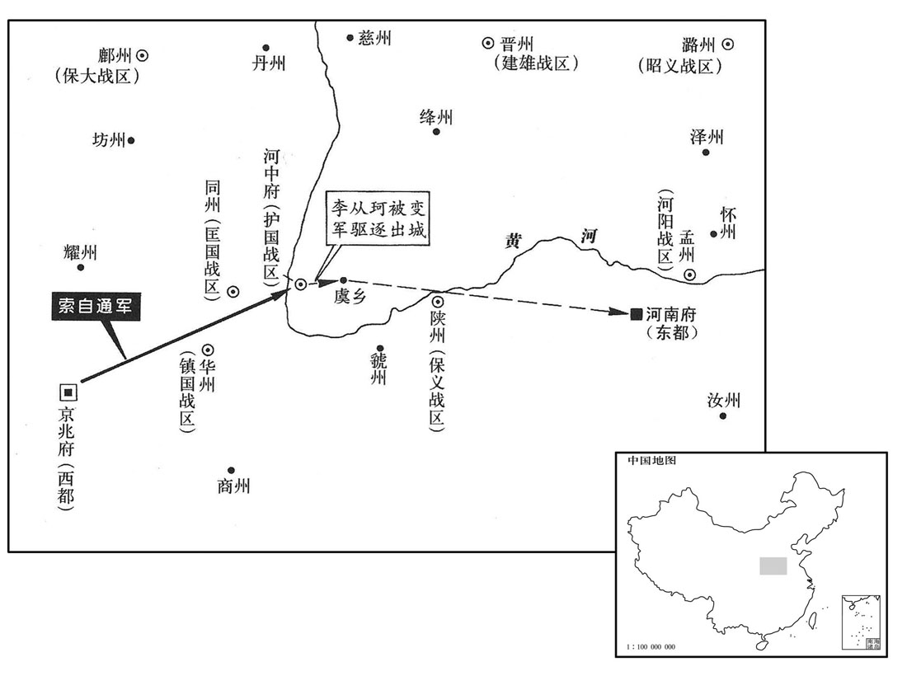
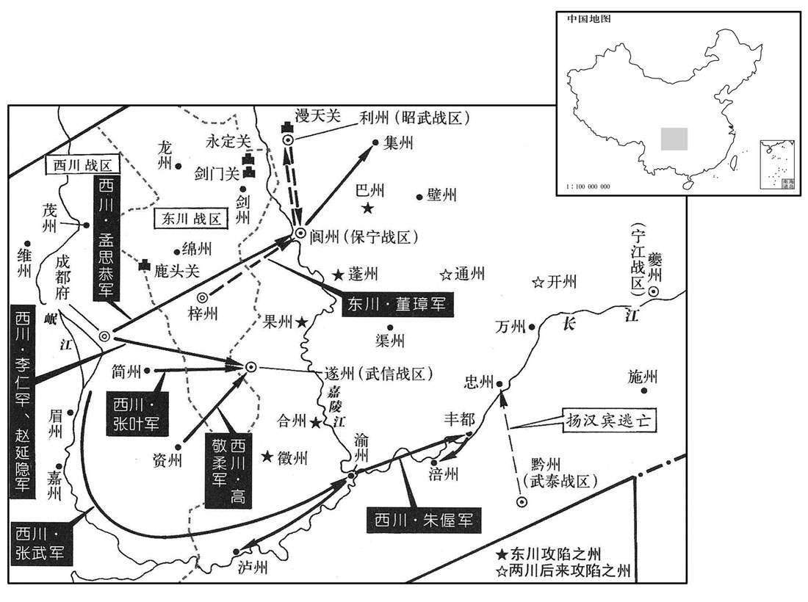
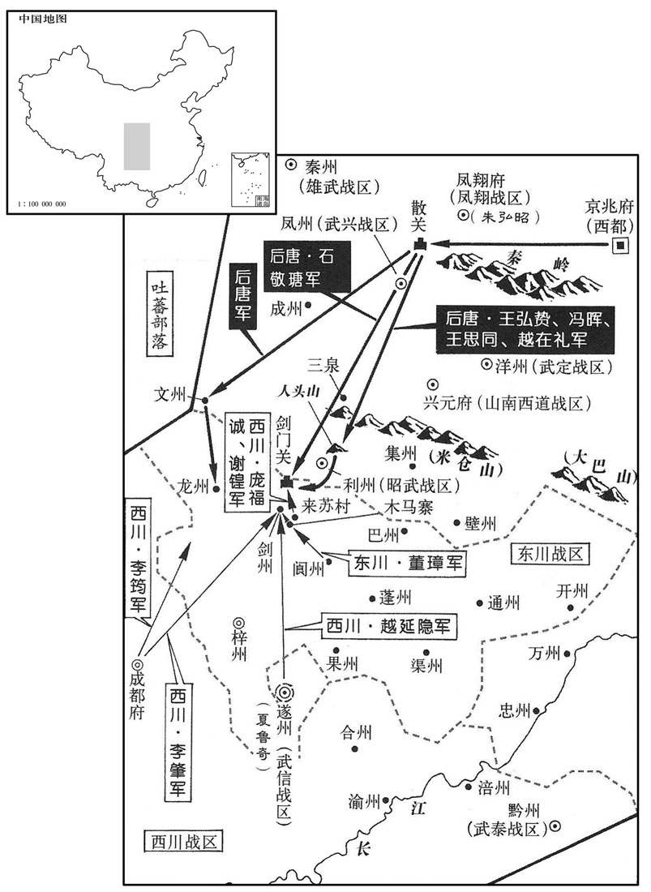
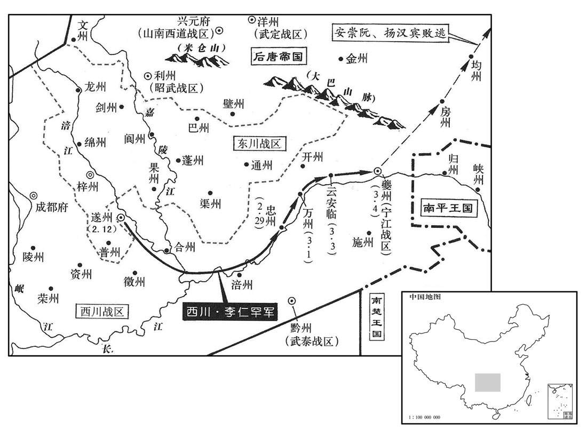
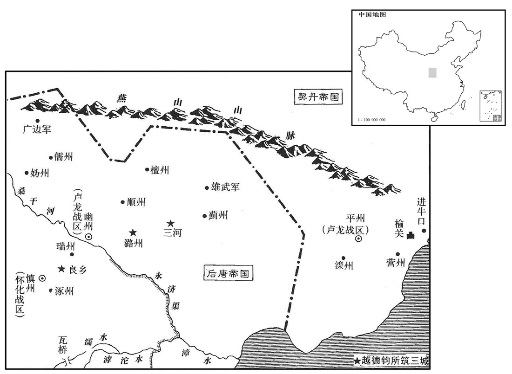
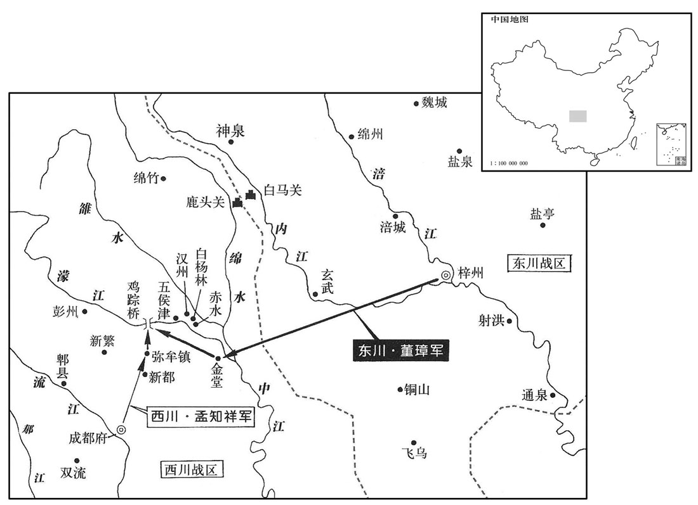

卷次与人物目录 / 卷277
资治通鉴 · 卷第二百七十七【后唐纪六】
公元930年至公元932年 · 原文、白话与胡三省注
本页按胡注本编排保存全卷内容。白话采用本站所据译本，未可靠对应的内容另列说明；事件标题用于定位，并非原书文字。
本卷共157段原文，155段有译文对应，2段缺译或待核对。
卷第二百七十七【后唐纪六】起上章摄提格（庚寅），尽玄黓执徐（壬辰）六月，凡二年有奇。
卷首原文与注释
明宗圣德和武钦孝皇帝中之下
公元930年 · 后唐明宗圣德和武钦孝皇帝长兴元年
长兴元年〔（庚寅、九三○）是年二月方改元。〕
上传原文的注释括号有异常，字符原样保留；无法可靠划分的段落默认全文显示。
本年事件索引（现代整理）
- 董璋在剑门设七寨孟知祥派赵季良赴梓州修好
- 郭在徽因建议铸造大面额钱币被贬
- 吴改封杨澈为德化王
- 赵季良评董璋贪暴而缺乏谋略将危及西川
- 李仁罕张业设宴请孟知祥孟知祥亲赴化解疑惧
- 孟知祥董璋上表反对朝廷在阆中建节增兵
- 明宗祭天大赦改元并调李从曮镇宣武
- 吴主立杨琏为太子
- 明宗任朱弘昭为凤翔节度使
- 后唐复称昭义军
- 曹淑妃立为皇后
- 王德妃因安重诲规劝宫中奢侈而怨恨他
- 高从诲向吴求援遭拒
- 董璋拘禁绵州刺史武虔裕
- 符习因与安重诲意见不合被罢为太子太师
- 安重诲矫诏令杨彦温驱逐李从珂
- 安重诲兼中书令
- 李从珂入朝后被明宗勒令闲居
- 索自通攻克河中斩杨彦温
- 明宗拒绝安重诲冯道赵凤惩处李从珂的建议
- 索自通任河中节度使后诬李从珂私造兵器
- 明宗加尊号圣明神武文德恭孝皇帝
- 王建立因被安重诲指为扰乱魏州而退休
- 董璋召集民兵剪发黥面并设永定关
- 孟知祥获准将十三盐监划归西川
- 后唐发生日食
- 后唐规定地方高级官员由朝廷任命
- 董璋派兵劫掠遂州阆州戍军
- 边彦温诬告安重诲谋反被明宗处死
- 后唐设三司使任张延朗掌三司
- 王传拯因徐知诰失信而杀陈宣据海州归后唐
- 王传拯遣使联络叔父王舆王舆告发后获任
- 赵凤称有人诬陷大臣明宗诛杀李行德张俭
- 明宗封李从荣为秦王李从厚为宋王
- 董璋因朝廷向阆州增兵而决定叛乱
- 孟知祥董璋联兵起兵攻取遂阆二州
- 安重诲因朝中怨言请求辞去机务明宗挽留
- 东川军攻陷阆州杀害李仁矩
- 姚洪痛斥董璋拒降被残酷杀害
- 范延光任枢密使安重诲仍掌机务
- 后唐削夺董璋官爵并发兵讨伐
- 孟思恭攻集州失利被董璋遣回
- 石敬瑭暂领东川事务并命王思同为伐蜀前锋
- 南汉攻取交州俘获静海节度使曲承美
- 李仁罕围攻遂州康文通率部投降
- 董璋冒雨进军利州因粮运不继退回阆州
- 吴越王钱镠为闽王册封使者上表自诉获准
- 冯赟任北都留守
- 后唐诛董光业全族
- 楚王马殷病重请朝廷任马希声承袭
- 孟知祥派张武率水军进取夔州
- 东川军攻取征合巴蓬果五州
- 吴相严可求卒徐知诰任子徐景通参政
- 南汉军进入占城掠取财宝
- 张武收取渝州泸州并遣军进攻黔州涪州
- 楚王马殷卒遗命诸子兄弟相继
- 石敬瑭军一度攻下剑门剑州后退保剑门
- 后唐下诏削夺孟知祥官爵
- 董璋求援孟知祥派李肇赵廷隐赴剑州增援
- 庞福诚谢锽夜袭后唐军收复剑州
- 后唐军分兵攻龙州被潘福超沙延祚击败
- 张武卒于渝州孟知祥命袁彦超接领其军
- 朱偓攻取涪州杨汉宾弃黔南逃往忠州
- 马希声承袭楚王并恢复藩镇旧制
- 契丹东丹王突欲率部众归降后唐
- 石敬瑭进攻剑州被赵廷隐李肇击退
- 夔州奏报收复开州
- 后唐任马希声为武安静江节度使
- 石敬瑭伐蜀无功安重诲亲赴前线督战
- 明宗下令遣回此前戍守夔州的西川兵
春，正月，董璋遣兵筑七寨于剑门。辛巳，孟知祥遣赵季良如梓州修好。〔先是董璋在东川，与孟知祥邻镇而未尝通问；天成三年，两镇因争盐利而有违言；去年璋遣使求昏于知祥，今知祥遣报使以修好，两释嫌怨以从讲解，惧朝廷加兵也。同舟遇风则胡、越相应如左右手，斯之谓矣。安重诲患两川之难制，不能因其构隙而鬬之，反从而合之，可以为善谋国乎！兵法曰：合则能离之。安重诲反是。好，呼到翻；下同。〕
春季，正月，东川节度使董璋派兵在剑门修筑七座营寨。辛巳（十六日），西川节度使孟知祥派其副使赵季良到梓州来与董璋修好，以相结纳。
鸿胪少卿郭在徽奏请铸当五千、三千、一千大钱；朝廷以其指虚为实，无识妄言，左迁卫尉少卿、同正。〔此唐官所谓员外置，同正员者也。〕
鸿胪少卿郭在徽奏请铸造当五千、三千、一千使用的大钱，后唐朝廷以为这种指虚为实的主张，是没有见识的胡说，把他贬降为卫尉少卿，比同正员。
吴徙平原王澈为德化王。〔江州德化县，本汉寻阳县。宋白曰：南唐所改。〕
吴国调迁平原王杨澈为德化王。
二月，乙未朔，赵季良还成都，谓孟知祥曰：「董公贪残好胜，志大谋短，终为西川之患。」〔史纪赵季良之言，为董璋攻孟知祥张本。〕
二月，乙未朔（初一），赵季良从梓州返回成都，对孟知祥说：“董璋这个人贪残好胜，野心大，谋略短，终究是我们西川的祸害。”
都指挥使李仁罕、张业欲置宴召知祥，先二日，有尼告二将谋以宴日害知祥；〔先，悉荐翻。〕知祥诘之，无状，〔无谋害之状也。诘，去吉翻。〕丁酉，推始言者军校都延昌、王行本，腰斩之。〔校，户教翻。都，姓也。春秋时郑大夫公孙阏字子都，子孙以为氏。〕戊戍，就宴，尽去左右，〔去，羌吕翻。〕独诣仁罕第；仁罕叩头流涕曰：「老兵惟尽死以报德。」由是诸将皆亲附而服之。〔史言孟知祥能推心以得人死力。〕
孟知祥的部属都指挥使李仁罕、张业打算设酒席宴请他，此前二日，有尼姑密告说，这两个属将阴谋在宴请时谋害孟知祥；孟知祥严加查究，没有获得证据。丁酉（初三），归罪于最先传言此事的军校都延昌和王行本，把二人处以腰斩。戊戌（初四），孟知祥去参加宴会，把随从人员都打发开，独自到李仁罕的住宅；李仁罕叩头流涕地说：“我是你的老部下，今后只有尽死命来报答你的恩德。”从此，孟知祥所部诸将都心悦诚服地亲近和依附于他。
壬子，孟知祥、董璋同上表言：「两川闻朝廷于阆中建节，绵、遂益兵，无不忧恐。〔阆中建节，谓置保宁军于阆州；绵、遂益兵，谓武虔裕刺绵州，夏鲁奇帅遂州，皆益兵戍之。事并见上卷上年。〕上以诏书慰谕之。
壬子（十八日），孟知祥与董璋共同向后唐明宗上表称：“东川、西川听说朝廷在阆中建立节度使，在绵州、遂州增加兵力，无不感到担忧和恐惧。”后唐明宗下诏书慰抚劝导他们。
乙卯，上祀圜丘，大赦，改元。〔改元长兴。〕凤翔节度使兼中书令李从曮入朝陪祀，三月，壬申，制徙从曮为宣武节度使。〔天成元年，李从曮再镇凤翔，至是徙镇。〕
乙卯（二十一日），明宗在圜丘祭天，实行大赦，把年号改为长兴。凤翔节度使兼中书令李从入朝陪祭，三月，壬申（初八），明宗下令把李从调迁为宣武节度使。
癸酉，吴主立江都王琏为太子。〔琏，立展翻。〕
癸酉（初九），吴国君主杨溥立江都王杨琏为太子。
丙子，以宣徽使朱弘昭为凤翔节度使。
丙子（十二日），后唐任命宣徽使朱弘昭为凤翔节度使。
复以安义为昭义军。〔梁均王龙德二年，晋王改昭义军曰安义军，见二百七十一卷。〕
后唐恢复安义军的旧名，仍称昭义军。
帝将立曹淑妃为后，淑妃谓王德妃曰：「吾素病中烦，〔中烦，谓胸中烦热。〕倦于接对，妹代我为之。」德妃曰：「中宫敌偶至尊，谁敢干之！」庚寅，立淑妃为皇后。德妃事后恭谨，后亦怜之。
后唐明宗将要立曹淑妃为皇后，淑妃对王德妃说：“我平素胸中烦热有病，厌倦那些接待应对的事，请你代替我去应承。”德妃说：“入中宫做皇后可以同天子匹偶，平起平坐，谁敢去干预！”庚寅（二十六日），立淑妃为皇后。德妃对待皇后恭顺谨慎，皇后也怜爱她。
初，王德妃因安重诲得进，常德之。帝性俭约，及在位久，宫中用度稍侈，重诲每规谏。妃取外库锦造地衣，重诲切谏，引刘后为戒；妃由是怨之。起初，王德妃是由于枢密权臣安重诲的关系才得以入宫的，经常感念安重诲。明宗本来习性俭朴，在位既久，宫内的费用也逐渐奢侈，安重诲时常规劝他。德妃调取外库的锦帛做地毯，安重诲极力谏阻，并引用前朝庄宗时刘皇后的事例以为戒鉴；德妃从此嫌怨安重诲。
初，王德妃因安重诲得进，常德之。〔欧史曰：德妃王氏，邠州饼家女也，有美色，号花见羞。少卖为梁将刘鄩侍儿。鄩卒，王氏无所归。是时帝正室夏夫人已卒，方求别室，有言壬氏于安重诲者，以告于帝而纳之。〕帝性俭约，及在位久，宫中用度稍侈，重诲每规谏。妃取外库锦造地衣，重诲切谏，引刘后为戒；〔谓庄宗刘皇后也。〕妃由是怨之。
本段缺少可靠对应白话，原文完整保留；未使用生成译文。
高从诲遣使奉表诣吴，告以坟墓在中国，〔高季兴，陕州硖石人也，故云然。〕恐为唐所讨，吴兵援之不及，谢绝之。〔高季兴请附于吴，见二百七十五卷天成二年。〕吴遣兵击之，不克。
荆南高从诲派使者奉呈表章来到吴国，表示高氏祖坟在北方，害怕被后唐朝廷所讨伐，那时吴兵会来不及援助他，因此，谢绝了吴国对他的笼络。吴国便派兵进攻荆南，没有能攻下来。
董璋恐编州刺史武虔裕窥其所为，〔按九域志，绵州东南至梓州一百三十七里。以其逼近，故恐为所窥。〕夏，四月，甲午朔，表兼行军司马，囚之府廷。〔以兼行军司马诱之，至梓州而囚之。府廷，东川府廷也。〕
董璋害怕绵州使武虔裕窥探他的行动，夏季，四月，甲午朔（初一），上表推荐他兼任行军司马，把他诱至梓州，囚押在东川府廷。
宣武节度使符习，自恃宿将，〔符习本成德将，从庄宗战于河上，故自恃为耆宿。〕论议多抗安重诲，重诲求其过失，奏之；丁酉，诏习以太子太师致仕。
宣武节度使符习，自恃是后唐宿将，论事议政常常与枢密使安重诲对抗，重诲寻找他的过错，奏告明宗；丁酉（初四），下诏命令符习以太子太师的荣誉名衔告老去官。
初，帝在真定，〔庄宗同光二年，帝镇真定。〕李从珂与安重诲饮酒争言，从珂殴重诲，〔殴，乌口翻。〕重诲走免；既醒，悔谢，重诲终衔之。至是，重诲用事，自皇子从荣、从厚皆敬事不暇。〔不暇，谓不敢自暇也。〕时从珂为河中节度使、同平章事，重诲屡短之于帝，帝不听。重诲乃矫以帝命谕河东牙内指挥使杨彦温使逐之。〔「河东」当作「河中」。〕是日，〔承上戊戍，故曰是日。〕从珂出城阅马，彦温勒兵闭门拒之，从珂使人扣门诘之曰：〔诘，去吉翻。〕「吾待汝厚，何为如是﹖」对曰：「彦温非敢负恩，受枢密院宣耳。〔枢密院用宣，三省用堂帖。今堂帖谓之省札，宣谓之密札。〕请公入朝。」从珂止于虞乡，〔九域志：虞乡县在河中府东六十里。〕遣使以状闻。使者至，壬寅，帝问重诲曰：「彦温安得此言﹖」〔谓言受枢密院宣也。〕对曰：「此奸人妄言耳，宜速讨之。」帝疑之，欲诱致彦温讯其事，〔讯，问也。诱，音酉。〕除彦温绛州刺史。重诲固请发兵击之，乃命西都留守索自通、〔索，苏各翻，姓也。〕步军都指挥使药彦稠将兵讨之。〔药，姓也，汉有药崧。按薛史：药彦稠，沙陀三部落人，必非崧后。〕帝令彦稠必生致彦温，吾欲面讯之。召从珂诣洛阳。从珂知为重诲所构，驰入自明。
以前，后唐明宗镇守真定时，其养子李从珂与安重诲曾在饮酒时争吵，李从珂殴打安重诲，安重诲躲避，才得以免遭殴打；酒醒以后，李从珂悔悟道歉，安重诲始终记恨他。到此时，安重诲掌权用事，皇子李从荣、李从厚都尊敬他不敢怠慢。当时李从珂任河中节度使、同平章事，安重诲多次在明宗面前说他的坏话，明宗不听。安重诲便假造明宗意旨，谕令河中牙内指挥使杨彦温驱逐他。这一天，李从珂出城检阅战马，杨彦温领兵关了城门，拒绝让他进城。李从珂命人扣门，质问他说：“我待你很厚重，你怎么能这样做？”杨彦温回答说：“我彦温不敢对您负恩，我是受枢密院的宣示，请您入朝。”李从珂暂驻扎在虞乡，派使者把情况向朝廷报告。使者到了以后，壬寅（初九），明宗问安重诲说：“杨彦温怎么能这么说呢？”安重诲回答说：“这是坏人杨彦温的胡说，应该赶快派兵征讨他。”明宗怀疑此事，想把杨彦温引诱来讯问情况，便调杨彦温为绛州刺史。安重诲坚持请求派兵攻打杨彦温，朝廷便命令西都留守索自通、步军都指挥使药彦稠统兵讨伐他。明宗指令药彦稠：“务必把杨彦温活着抓回来，我要当面讯问他。”又召唤李从珂到京城洛阳来。李从珂知道是被安重诲所陷害，赶快入朝自己进行表白。
加安重诲兼中书令。
后唐加安重诲兼任中书令。
李从珂至洛阳，上责之使归第，绝朝请。〔薛史曰：归清化里第。〕
李从珂来到洛阳，明宗责令他回自己的府第，断绝入朝请见。
辛亥，索自通等拔河中，斩杨彦温，〔承安重诲指，斩杨彦温以灭口。为潞王杀药彦稠、索自通自投于水张本。〕癸丑，传首来献。上怒药彦稠不生致，〔不生致杨彦温也。〕深责之。
辛亥（十八日），索自通等攻下河中，斩杀了杨彦温，癸丑（二十日），把他的首级传送到洛阳来献报朝廷。明宗恼怒药彦稠不把他活着送来，严厉地责备药彦稠。
安重诲讽冯道、赵凤奏从珂失守，宜加罪。上曰：「吾儿为奸党所倾，未明曲直，公辈何为发此言，意不欲置之人间邪﹖此皆非公辈之意也。」〔言二人为安重诲所使。〕二人惶恐而退。他日，赵凤又言之，上不应。明日，重诲自言之，上曰：「朕昔为小校，〔校，户教翻。〕家贫，赖此小儿拾马粪自赡，以至今日为天子，曾不能庇之邪！卿欲如何处之于卿为便﹖」〔上亦以此语激安重诲。处，昌吕翻。〕重诲曰：「陛下父子之间，臣何敢言！惟陛下裁之！」上曰：「使闲居私第亦可矣，何用复言！」〔复，扶又翻。〕
安重诲指使冯道、杨凤表奏李从珂失于职守，应该加罪。明宗说：“我儿被奸党所倾害，是非曲直还未弄明白。你们二位为什么说这样的话，是不是想不让他活在人间，这些都不是你们二位的意思哟。”冯、杨二人吓得惶恐而退。过些天，赵凤又奏谈此事，明宗不表态。第二天，安重诲自己奏言其事，明宗说：“我从前当小校，家里贫穷，依赖这个孩子拣拾马粪养家，到了今天我当了皇帝，就不能庇护他吗？你想怎样处置他对你才合适？”安重诲说：“陛下父子之间的事，为臣何敢乱说！只能听凭陛下裁夺！”明宗说：“让他闲居在自己家里也就可以了，何必再多谈此事！”

丙辰，以索自通为河中节度使。自通至镇，承重诲指，籍军府甲仗数上之，〔上，时掌翻。〕以为从珂私造；赖王德妃居中保护，从珂由是得免。士大夫不敢与从珂往来，惟礼部郎中史馆修撰吕琦居相近，时往见之，从珂每有奏请，皆咨琦而后行。〔从珂居闲，奏请咨吕琦而后行；及其在位，能厚琦而不能用琦，何也﹖〕
丙辰（二十三日），任命索自通为河中节度使。索自通到了镇所，秉承安重诲的意旨，登记点收军库中铠甲兵器数字向朝廷报告，说成是李从珂私自制造；仰仗王德妃在内部保护，李从珂才得以免罪。士大夫不敢与李从珂往来，只有礼部郎中、史馆修撰吕琦和他居住相近，有时去看他，李从珂遇到有事奏请时，都是问了吕琦之后才办。
戊午，帝加尊号曰圣明神武文德恭孝皇帝。
戊午（二十五日），明宗加尊号为圣明神武文德恭孝皇帝。
安重诲言昭义节度使王建立过魏州有摇众之语，五月，丙寅，制以太傅致仕。〔安重诲、王建立交恶，见上卷天成三年。〕
安重诲奏言昭义节度使王建立经过魏州时有动摇人心之语，五月，丙寅（初三），命令他以太傅职称去官退休。
董璋阅集民兵，皆剪发黥面，复于剑门北置永定关，布列烽火。〔复，扶又翻。〕
董璋检阅召集来的民兵，都给他们剪发黥面，又在剑门之北设置永定关，布列烽火。
孟知祥累表请割云安等十三盐监隶西川，〔云安县，汉巴郡朐铁县地，周武帝改为云安县，属巴东郡，唐属夔州，后改为云安监。又夔州大昌县、万州南浦县渔阳监皆有盐官，隶宁江军巡属；而所谓十三监未知尽在何所。〕以盐直赡宁江屯兵，辛卯，许之。
孟知祥多次上表请求割划云安等十三个盐务监所隶属西川，用买卖的钱来供给宁江的屯兵，辛卯（二十八日），得到准许。
六月，癸巳朔，日有食之。
六月，癸巳朔（初一），出现日食。
辛亥，敕防御、团练使、刺史、行军司马、节度副使，自今皆朝廷除之，诸道无得奏荐。
辛亥（十九日），敕命：防御使、团练使、刺史、行军司马、节度副使，今后都由朝廷任命，各节度使不得奏荐。
董璋遣兵掠遂、阆镇戍，秋，七月，戊辰，两川以朝廷继遣兵屯遂、阆，复有论奏，〔复，扶又翻。〕自是东北商旅少敢入蜀。〔少，诗沼翻。〕
董璋派兵劫掠守卫在遂州、阆州的官军，秋季，七月，戊辰（初七），两川因为朝廷继续派兵屯戍遂州、阆州，又有奏章议论此事，从此东北方向的商旅，很少敢于入蜀。
八月，乙未，捧圣军使李行德、〔按五代会要，应顺元年，改龙武、神武四十指挥为捧圣左、右军。据此，则是时先已有捧圣军矣。宋白曰：长兴三年改在京龙武、神武四十指挥为捧圣左、右军。〕十将张俭引告密人边彦温告「安重诲发兵，云欲自讨淮南；〔因天成二年安重诲尝有伐吴之议，遂以是诬告之。〕又引占相者问命。」〔相，息亮翻。〕帝以问侍卫都指挥使安从进、药彦稠，二人曰：「此奸人欲离间陛下勋旧耳。〕间，古苋翻。〕重诲事陛下三十年，〔梁均王贞明二年，帝始为安国节度，以安重诲为中门使，至是纔十六年；盖帝与重诲皆应州人，其相从久矣。〕幸而富贵，何苦谋反！臣等请以宗族保之。」帝乃斩彦温，召重诲慰抚之，君臣相泣。〔盖是时安重诲之迹已危矣。〕
八月，乙未（初四），捧圣军使李行德、十将张俭引领告密人边彦温奏告：安重诲起兵，说要自己去讨伐淮南；又召引占相者为自己算命。明宗为此咨询于侍卫都指挥使安从进、药彦稠，二人说：“这是奸人要离间对陛下有功勋的旧臣。安重诲给陛下做事三十年，有幸得到富贵，何苦要谋反！我们请求用自己的家族性命担保他。”明宗便把边彦温杀了，并召见安重诲慰抚，君臣相对而哭泣。
以前忠武节度使张延朗行工部尚书，充三司使。三司使之名自此始。〔自宋熙宁以前，三司使位亚执政，专制国计，权任重矣。〕
本段缺少可靠对应白话，原文完整保留；未使用生成译文。
吴徐知诘以海州都指挥使王传拯有威名，得士心，值团练使陈宣罢归，知诰许以传拯代之；既而复遣宣还海州，征传拯还江都。传拯怒，以为宣毁之，己亥，帅麾下入辞宣，〔帅，读曰率。〕因斩宣，焚掠城郭，帅其众五千来奔。知诰曰：「是吾过也。」免其妻子。涟水制置使王岩将兵入海州，〔涟水至海州一百八十里。〕以岩为威卫大将军，知海州。
吴国中书令徐知诰因为海州都指挥使王传拯有威名，得人心，正赶上团练使陈宣罢官归家，徐知诰许诺由王传拯代替他；接着又把陈宣派遣回海州，而征召王传拯还归江都。王传拯发怒，以为是陈宣诋毁他所致。己亥（初八），率领部属到陈宣处辞行，借机杀了陈宣，焚烧抢掠城郭，带领步众五千人投奔后唐。徐知诰说：“这是我的过错。”免加王传拯的妻子的罪。涟水制置使王岩领兵进入海州，便任用王岩为威卫大将军，主持海州政事。
传拯，绾之子也，〔吴先以王绾知海州，杨隆演之建国也，加镇东大将军。〕其季父舆为光州刺史。传拯遣间使持书至光州，〔间，古苋翻。使，疏吏翻。〕舆执之以闻，因求罢归；〔以兄子外叛，身居边郡，心迹危疑，故求罢归。〕知诰以舆为控鹤都虞候。时政在徐氏，典兵宿卫者尤难其人，知诘以舆重厚慎密，故用之。
王传拯是王绾的儿子，他的叔叔王舆为光州刺史。传拯派人拿着他的信秘密来到光州找王舆，王舆拘留来使，上报吴主，并因此要求罢官还家，徐知诰任用王舆为控鹤都虞候。当时吴国政权掌握在徐氏手中，领兵宿卫者尤其难得，徐知诰因为王舆为人厚重慎密，所以用他。
壬寅；赵凤奏：「窃闻近有奸人，诬陷大臣，摇国柱石，行之未尽。」〔言未尽行诛也。」帝乃收李行德、张俭，皆族之。
壬寅（十一日），后唐赵凤奏称：“听说近来有奸人诬陷大臣，动摇国家的柱石，还没有完全诛尽。”明宗便下令收捕李行德、张俭，把二人的家族都诛杀了。
立皇子从荣为秦王；丙辰，立从厚为宋王。
立皇子李从荣为秦王；丙辰（二十五日），立李从厚为宋王。
董璋之子光业为宫苑使，在洛阳，璋与书曰：「朝廷割吾支邵为节镇，〔谓夏鲁奇镇遂州，李仁矩镇阆州，又传割绵、龙也。〕屯兵三千，〔【张：「千」作「川」。】〕是杀我必矣。汝见枢要为吾言：〔枢要，谓两枢密。董璋意专指安重诲。为，于伪翻。〕如朝廷更发一骑入斜谷，吾必反！与汝诀矣。」〔骑，奇寄翻。斜，余遮翻。谷，音浴。〕光业以书示枢密承旨李虔徽。未几，朝廷又遣别将荀咸乂将兵戍阆州，〔几，居岂翻。〕光业谓虔徽曰：「此兵未至，吾父必反。吾不敢自爱，〔言不敢爱其死也。〕恐烦朝廷调发，〔言恐须用兵。调，徒钓翻。〕愿止此兵，吾父保无他。」虔徽以告安重诲，重诲不从。璋闻之，遂反。利、阆、遂三镇以闻，〔利帅李彦琦，阆帅李仁矩，遂州夏鲁奇。〕且言已聚兵将攻三镇。重诲曰：「臣久知其如此，陛下含容不讨耳。」帝曰：「我不负人，人负我则讨之。」
董璋之子董光业任宫苑使，在洛阳，董璋给他写信说：“朝廷把我管辖的梓州以外各州划出另设节镇，屯兵在三川，这是一定要把我置于死地。你见到枢密要员替我传言：如果朝廷再多派一个人马进入斜谷，我就必定造反，和你诀别了。”董光业把信给枢密承旨李虔徽看了。没有多久，后唐朝廷又派别将荀咸率兵戍守阆州，董光业对李虔徽说：“不等这一支兵马到达，我父亲必然造反。我不敢爱惜自己的生命，恐怕让朝廷调发人马招惹麻烦，希望能够停止派遣这支人马，我父亲保证没有别的举动。”李虔徽把董光业意见报告安重诲，安重诲没有答应。董璋听说后，马上造反。利州、阆州、遂州三镇向朝廷报告，并说董璋已经聚集兵马将要进攻三镇。安重诲说：“我早就知道董璋要这样，陛下太容忍他，不肯讨伐啊。”明宗说：“我不亏负于人，人亏负于我便要讨伐他。”
九月，癸亥，西川进奏官苏愿白孟知祥云：「朝廷欲大发兵讨两川。」〔进奏官在京师，故以其事白其主帅。〕知祥谋于副使赵季良，季良请以东川兵先取遂、阆，然后并兵守剑门，则大军虽来，吾无内顾之忧矣。〔两川同心协力守险，则西川无内顾之忧。〕知祥从之，遣使约董璋同举兵。璋移檄利、阆、遂三镇，数其离间朝廷，〔数，所具翻。间，古苋翻；下无间同。〕引兵击阆州。〔九域志：梓州东北至阆州三百九里。〕庚午，知祥以都指挥使李仁罕为行营都部署，汉州刺史赵廷隐副之，简州刺史张业为先锋指挥使，将兵三万攻遂州；〔九域志：；遂州北至梓州二百五里。〕别将牙内都指挥使侯弘实、先登指挥使孟思恭将兵四千会璋攻阆州。
九月，癸亥（初三），西川进奏官苏愿向孟知祥禀告：“朝廷要派大军讨伐两川。”孟知祥和节度副使赵季良谋议对策，赵季良建议让东川兵马先占领遂州、阆州，然后西川同东川合兵扼守剑门，这样，即使朝廷大军来了，我们两川也没有后顾之忧了。孟知祥听从了赵季良的意见，派使者邀约董璋共同起兵。董璋便向利州、阆州、遂州三镇送发檄文，责备他们离间朝廷与东川的关系，发兵进攻阆州。庚午（初十），孟知祥任用都指挥使李仁罕为行营都部署，汉州刺史赵廷隐做他的副手，简州刺史张业为先锋指挥使，率领三万士兵进攻遂州，又派牙内都指挥使侯弘实、先登指挥使孟思恭领兵四千会合董璋进攻阆州。

安重诲久专大权，中外恶之者众；〔恶，乌路翻。〕王德妃及武德使孟汉琼浸用事，数短重诲于上。〔数，所角翻。〕重诲内忧惧，表解机务，上曰：「朕无间于卿，诬罔者朕既诛之矣，〔谓李行德、张俭也。〕卿何为尔﹖」甲戍，重诲复面奏曰：〔复，扶又翻。〕「臣以寒贱，致位至此，勿为人诬以反，非陛下至明，臣无种矣。〔种，章勇翻。〕由臣才薄任重，恐终不能镇浮言，愿赐一镇以全余生。」上不许；重诲求之不已，上怒曰：「听卿去，朕不患无人！」前成德节度使范延光劝上留重诲，且曰：「重诲去，谁能代之﹖」上曰：「卿岂不可﹖」延光曰：「臣受驱策日浅，且才不逮重诲，何敢当此！」上遣孟汉琼诣中书议重诲事，冯道曰：「诸公果爱安令，〔时安重诲兼中书令，故称之。〕宜解其枢务为便。」〔冯道肯发此言，盖知之矣。〕赵凤曰：「公失言！」乃奏大臣不可轻动。
安重诲长期掌握大权，内外怨恨他的人很多；王德妃和武德使孟汉琼渐渐握有势力，几次在明宗面前说他的坏话。安重诲心里担忧害怕，上表要求解除他的枢密机要任务，明宗对他说：“朕和你之间没有隔阂。造谣诬陷你的人，朕已经把他们诛杀了，你还要干什么呢？”甲戌（十四日），安重诲又面奏明宗说：“我出身贫寒卑贱，得到如此高位，现在被人诬告说我要谋反，假若不是陛下极度圣明，我就灭门无后了。由于我才能小责任重，恐怕终究不能压制住流言蜚语，请求陛下赐给我一个外镇使命以保全余生。”明宗没有答应他的请求，安重诲没完没了地反复请求，明宗发怒说：“听凭你去吧，朕不愁没有人接替你。”从前成德节度使范延光劝奏明宗留用安重诲，并且说：“重诲如果走了，有谁能代替他？”明宗说：“你难道不可以吗？”范延光说：“我受陛下驱使的时间还短，而且才干不及重诲，怎么敢当此重任！”明宗派孟汉琼到中书省讨论安重诲的问题，冯道说：“诸位果真正爱惜安令公，解除他的枢要任务为宜。”赵凤说：“您失言了！”于是回奏认为大臣不可轻易变动。
东川兵至阆州，诸将皆曰：「董璋久蓄反谋，以金帛啖其士卒，〔啖，徒滥翻。〕锐气不可当，宜深沟高垒以挫之，不过旬日，大军至，贼自走矣。」李仁矩曰：「蜀兵懦弱，安能当我精卒！」遂出战，兵未交而溃归。董璋昼夜攻之，庚辰，城陷，杀仁矩，灭其族。
东川的兵马进到阆州，戍守的诸将都说：“董璋早就蓄谋造反，用金帛财物收买他的士兵，锐气不可阻挡，应该挖筑深沟高垒来挫败他，不用十天，朝廷大军到来，贼兵自己就会退走的。”阆州主帅李仁矩说：“蜀兵懦弱没有战斗力，怎能抵挡我军的精兵强卒！”于是便出域迎战，还没有交锋就溃败回来。董璋令军队不分昼夜攻击，庚辰（二十日），城池被攻陷，杀了李仁矩，诛灭了他的家族。
初，璋为梁将，指挥使姚洪尝隶麾下，至是，将兵千人戍阆州；璋密以书诱之，洪投诸厕。〔诱，音酉。〕城陷，璋执洪而让之曰：「吾自行间奖拔汝，〔行，户刚翻。〕今日何相负﹖」洪曰：「老贼！汝昔为李氏奴，〔董璋先为汴富人李让家僮。〕扫马粪，得脔炙，感恩无穷。〔脔，力兖翻，肉作片也。炙，之夜翻，燔肉也。〕今天子用汝为节度使，何负于汝而反邪﹖汝犹负天子，吾受汝何恩，而云相负哉！汝奴材，固无耻；吾义士，岂忍为汝所为乎！吾宁为天子死，〔宁为，于伪翻。〕不能与人奴并生！」璋怒，然镬于前，〔镬，户郭翻。鼎大无足曰镬。然，烧也。〕令壮士十年刲其肉自啖之，〔刲，涓畦翻，割也。〕洪至死骂不绝声。帝置洪二子于近卫，厚给其家。
过去，董璋在后梁为将时，指挥使姚洪曾经隶属于他的部下，此时正领兵千人戍守阆州；董璋暗地给他写信诱降，姚洪把信丢入厕所。城陷后，董璋抓住姚洪，责备他说：“我自行伍间提拔你，今天你为何相负于我？”姚洪说：“老贼！你从前在李姓富人家当奴仆，扫马粪，得点烤肉片就感恩不尽。现在皇上用你当节度使，有什么亏负于你而造反呀？你尚且负心于天子，我受你什么恩典了，你竟说起什么相负啊！你是个奴才，本来就无耻；我是义士，岂能干你所干的事呢！我宁可为天子死，不能同人奴共生！”董璋大怒，在他的面前烧起大锅，叫十个壮汉割他的肉自己煮来吃，姚洪至死骂声不绝。明宗把姚洪的两个儿子安置在侍卫中，优厚地抚恤他的家属。
甲申，以范延光为枢密使，安重诲如故。〔言虽进用范延光，而安重诲职任如故。〕
甲申（二十四日），任命范延光为枢密使，安重诲任职如故。
丙戍，下制削董璋官爵；兴兵讨之。丁亥，以孟知祥兼西南〔【章：十二行本「南」下有「面」字；乙十一行本同；张校同，云无注本亦无。】〕供馈使。〔孟知祥之兵已攻遂州，朝廷岂不知之邪﹖犹欲怀辑之以离董璋之交耳。唇亡齿寒，已了了于知祥胸中，此策安所施哉！〕以天雄节度石敬瑭为东川行营都招讨使。〔「节度」之下当有「使」字。蜀本有「使」字。〔【章：十二行本「度」下正有「使」字；张校同，云无注本亦无。】〕以夏鲁奇为之副。
丙戌（二十六日），下命令削去董璋的官爵，兴兵讨伐他。丁亥（二十七日），任用孟知祥兼职西南供馈使。任用天雄节度使石敬瑭为东川行营都招讨使，夏鲁奇为他的副手。
璋使孟思恭分兵攻集州，〔集州，本汉宕渠县，宇文周置集州，隋废为难江县，唐复置集州，宋熙宁五年复废州为难江县，属巴州。九域志：县在州北一百六十里。〕思恭轻进，败归；璋怒，遣还成都，知祥免其官。
董璋让孟思恭分兵攻打集州，孟思恭轻率进兵，打了败仗回来；董璋发怒，把他遣回成都，孟知祥免了他的官职。
戊子，以石敬瑭权知东川事。庚寅，以右武卫上将军王思同为西都留守兼行营马步都虞候，为伐蜀前锋。
戊子（二十八日），任命石敬瑭暂时主持东川的事务。庚寅（三十日），任用右武卫上将军王思同为西都留守兼行营马步都虞候，做伐蜀的前锋。
汉主遣其将梁克贞、李守墉攻交州，拔之，执静海节度使曲承美以归，〔唐末曲颢据交州，至承美而败。〕以其将李进守交州。
南汉主遣派他的大将梁克贞、李守攻打交州，攻了下来，抓获静海节度使曲承美而归，任用他的将领李进戍守交州。
冬，十月，癸巳，李仁罕围遂州，夏鲁奇婴城固守；孟知祥命都押牙高敬柔帅资州义军二万人筑长城环之。〔帅，读曰率。环，音宦。〕鲁奇遣马军都指挥使康文通出战，文通闻阆州陷，遂以其众降于仁罕。
冬季，十月，癸巳（初三），李仁罕包围遂州，夏鲁奇依城抵御固守；孟知祥军都押牙高敬柔率领资州义军二万人筑起一道很长的围墙环绕包围遂州。夏鲁奇派马军都指挥使康文通出战，康文通听说阆州已被董璋攻陷，便带领他的部众投降了李仁罕。
戊戍，董璋引兵趣利州，〔九域志：阆州西北至利州二百四十里。趣，七喻翻；下同。〕遇雨，粮运不继，还阆州。知祥闻之，惊曰：「比破阆中，〔比，毗至翻。〕正欲径取利州，其帅不武，必望风遁去。〔利帅李彦琦。帅，所类翻。〕吾获其仓廪，据漫天之险，〔漫天寨在利州北，有小漫天、大漫天二寨。〕北军终不能西救武信。〔武信军，遂州。〕今董公僻处阆州，远弃剑阁，非计也。」〔处，昌吕翻。〕欲遣兵三千助守剑门；璋固辞曰：「此已有备。」〔为剑门失守张本。〕
戊戌（初八），董璋带领人马攻向利州，途中遇到大雨，粮秣运输跟不上，又回阆州。孟知祥听到这件事后，吃惊地说：“刚刚攻破阆州，正要挥军直下攻取利州，其主帅不敢抵抗，必然望风逃遁。我军便可缴获他的粮食仓储，占据漫天寨的险要，北方来的朝廷军队最终也一定不能西救遂州。现在董公偏僻地留处阆州，远离剑阁，不是上策。”准备派兵三千帮助守卫剑门；董璋坚决拒辞说：“此事已经有了准备。”
钱镠因朝廷册闽王使者裴羽还，〔裴羽盖册闽王延钧者也。还，从宣翻，又如字。〕附表引咎；其子传瓘及将佐屡为镠上表自诉。〔为，于伪翻。〕癸卯，敕听两浙纲使自便。〔系治两浙纲使见上卷上年。〕
吴越王钱乘着后唐朝廷册立闽王的使者裴羽回朝之便，附送表章表示自己有过失；他的儿子钱传和将佐也屡次为钱上表作自我表白。癸卯（十三日），明宗下敕文，让释放两浙纲使，听其自便。
以宣徽北院使冯赟为左卫上将军、北都留守。
后唐任用宣徽北院使冯为左卫上将军、北都留守。
丁未，族诛董光业。〔以其父璋反也。〕
丁未（十七日），诛杀了董光业全族。
楚王殷寝疾，遣使诣阙，请传位于其子希声。朝廷疑殷已死，辛亥，以希声为起复武安节度使兼侍中。
楚王马殷病危，派使者进诣朝廷，请求把职位传给其子马希声。朝廷怀疑马殷已死，辛亥（二十一日），便把马希声起用复职为武安节度使兼侍中。
孟知祥以故蜀镇江节度使张武为峡路行营招收讨伐使，，将水军趣夔州，〔前蜀置镇江军于夔州，张武其旧帅也。趣，七喻翻。〕以左飞棹指挥使袁彦超副之。〔天成元年，孟知祥置左、右飞棹六营。〕
孟知祥任用前蜀镇江节度使张武为峡路行营招收讨伐使，带领水军直夔州，任用左飞棹指挥使袁彦超为他的副手。
癸丑，东川兵陷征、合、巴、蓬、果五州。〔徧考隋唐地理志、五代职方考、元丰九域志，皆无征州。按东川之兵时自遂、阆东略，九域志，合州在遂州东二百二十里，果州在遂州东南一百八十里，巴州在阆州东二百四十五里，蓬州在果州东北一百八十五里；征州必在遂、合、果三州之间。〕
癸丑（二十三日），东川兵攻陷徵、合、巴、蓬、果五州。
丙辰，吴左仆射、同平章事严可求卒。〔严可求忠于徐氏者也。徐温既卒，可求相吴，坐视徐知询之废不能山一计，权不在焉故也。〕徐知诰以其长子大将军景通为兵部尚书、参政事，知诰将出镇金陵故也。
丙辰（二十六日），吴国左仆射、同平章事严可求去世。徐知诰任用他的长子大将军徐景通为兵部尚书、参政事，是因为徐知诰将要出镇金陵的缘故。
汉将梁克贞入占城，取其宝货以归。〔占城国在西南海上，其地方千里，东至海，西至云南，南邻真腊，北抵驩州。其人俗与大食同，其乘象马，其食稻米。〕
南汉大将梁克贞攻入占城，掠取了占城的财宝货物而归。
十一月，戊辰，张武至渝州，刺史张环降之，遂取泸州，〔九域志：渝、泸二州相去七百余里。降，户江翻。泸，音卢。〕遣先锋将朱偓分兵趣黔、涪。〔九域志：涪州西至渝州三百四十里，东南至黔州四百九十里。将，即亮翻。趣，七喻翻。黔，其今翻。涪，音浮。〕
十一月，戊辰（初九），张武进到达渝州，刺史张环向他投降，于是进而占领了泸州，又派先锋将朱分兵向黔州和涪州进军。
己巳，楚王殷卒，〔年七十九。〕遗命诸子，兄弟相继；置剑于祠堂，曰：「违吾命者戮之！」〔为殷诸子争国以至于亡张本。〕诸将议遣兵守四境，然后发丧，兵部侍郎黄损曰：「吾丧君有君，〔用左传语。吾丧，息浪翻。〕何备之有！宜遣使诣邻道告终称嗣而已。」
己巳（初十），楚王马殷去世，遗命给几个儿子，要兄死弟续；放置一把宝剑在祠堂内，并说：“谁要是违背我的遗命，就杀了他！”他部下的诸将讨论，主张先派兵防守四面边境，然后再发布丧讯，兵部侍郎黄损说：“我们丧失了君主还有君主，有什么要防备的？应该派遣使者到各个邻郡去说明先君去世、后君嗣位就行了。”
石敬瑭入散关，阶州刺史王弘贽、泸州刺史冯晖与前锋马步都虞候王思同、步军都指挥使赵在礼引兵出人头山后，过剑门之南，还袭剑门，〔【章：十二行本「克」上有「壬申」二字；乙十一行本同；退斋校同；张本同，云无注本亦无。】〕之，杀东川兵三千人，获都指挥使齐彦温，据而守之。晖，魏州人也。甲戍，弘贽等破剑州，而大军不继，乃焚其庐舍，取其资粮，还保剑门。〔今利州昭化县南有白卫岭，与剑门相接。九域志：剑州东北至剑门五十五里。考异曰：实录：「辛巳，军前奏：『今月十三日，王弘贽、冯晖自利州入山路，出剑门关外倒下，杀董璋把关兵士约三千人，获都指挥使齐彦温，大军进攻入剑门次。』又，丙戊，军前奏：『今月十七日收下剑州，破贼千余人，获指挥使刘太。』李昊蜀高祖实录：「己卯，东川告急，今月十八日北军自白卫岭人头山后过，从小剑路至汉源驿出头倒入剑门，打破关寨，掩捉彦温及将士五百余人，遂相次构唤大军，据关下营。又，庞福诚、谢锽相谓曰：『北军昨来既得关寨之后，隔一曰，大军曾下至剑州，而乃般运粮食，烧舍自惊，还奔关寨。』十国纪年后蜀史：「壬申，弘贽、晖袭陷剑门；癸酉，攻焚剑州，取粮还屯剑门。己卯，东川告急使至成都，知祥命牙内都指挥使李肇师兵五千赴援，董璋自阆州帅两川兵屯木马寨。先是，庞福诚、谢锽屯阆州北来苏寨，闻剑门陷，惧北军据剑州，帅部兵千余人由间道先董璋至剑州，壁于衙城后。士卒方食，北军万余人自屯驰下，福诚等趋河桥迎击之，北军小却。福诚帅数百人夜升北山颠，转至北军壁外大呼噪，锽命将士以弓弩短兵急击之，北军惊援，弃戈甲而遁。锽追袭之，北军退保剑门，十余日不窥剑州。」按剑门至成都尚十许程，若十八日剑门失守，何得二十日知祥已闻之邪！今从实录十三日壬申为定。若隔一日下至剑州，则十五日甲戍，非十七日也。盖思同等以大军未至，故收粮烧舍，还保剑门，故福诚等得复入剑州。李昊叙事甚详，无执刘太事，今删之。晋高祖实录云「甲申平剑州，破贼千余人」，尤误也。〕
后唐石敬瑭进入散关，阶州刺史王弘贽、泸州刺史冯晖与前锋马步都虞候王思同、步兵都指挥使赵在礼带领军队出人头山之后，绕至剑门之南，回过头来袭击剑门，壬申（十三日）攻了下来，杀死东川兵三千人，擒获都指挥使齐彦温，占据了剑门险隘而加以防守。冯晖是魏州人。甲戌（十五日），王弘贽等攻破剑州，而大部队未能跟着上来，便烧了剑州守军的房舍，掠取了物资粮食，回军保卫剑门。

乙亥，诏削孟知祥官爵。
乙亥（十六日），明宗下诏书，削去孟知祥的官爵。
己卯，董璋遣使至成都告急。知祥闻剑门失守，大惧，曰：「董公果误我！」庚辰，遣牙内都指挥使李肇将兵五千赴之，戒之曰：「尔倍道兼行，先据剑州，北军无能为也。」又遣使诣遂州，令赵廷隐将万人会屯剑州。〔时赵廷隐与李仁罕围遂州，孟知祥知夏鲁奇无能为，而剑阁之险不可不争，故使赵廷隐赴之。〕又遣故蜀永平节度使李筠将兵四千趣龙州，守要害。〔防唐兵由邓艾故道而入蜀也。史言孟知祥虑患之周。〕时天寒，士卒死惧，观望不进，廷隐流涕谕之曰：「今北军势盛，汝曹不力战却敌，则妻子皆为人有矣。」众心乃奋。〔蜀兵皆亡国之余。王衍之亡也，蜀人妻子系虏者多矣，赵廷隐以其所经见实利害告之，夫安得而不奋！〕
己卯（二十日），董璋派使者到成都告急。孟知祥听说剑门失守，大为恐惧，并说：“董璋果然贻误于我！”庚辰（二十一日），派牙内都指挥使李肇领兵五千去救援，并告诫他说：“你加倍赶路，先去占据剑州、北方来的军队就没有办法了。”又派使者到遂州，命令赵廷隐带领万人会师驻扎剑州。又派遣原来前蜀永平节度使李筠领兵四千奔赴龙州，把守要害。当时，天气寒冷，士兵恐惧，观望不肯前进，赵廷隐流着眼泪劝告大家说：“现在北军气势强盛，你们如不竭尽全力去抵挡敌军，那样，老婆孩子就都要为别人所有了！”兵众的心情才激奋起来。
董璋自阆州将两川兵屯木马寨。
董璋从阆州率领两川的兵马驻扎在木马寨。
先是，西川牙内指挥使太谷庞福诚、昭信指挥使谢锽屯来苏村，〔益昌江东越大山数重有狭径，名来苏，蜀人于江西置栅守之。渡江出剑门南二十里至青强店与官路合。九域志：蓬州仪陇县有来苏镇，即其地。锽，户盲翻。〕闻剑门失守，相谓曰：「使北军更得剑州，则二蜀势危矣。」遽引部兵千余人间道趣剑州。始至，〔间，古苋翻。趣，七喻翻；下同。〕官军万余人自北山大下，会日暮，二人谋曰：「众寡不敌，逮明则吾属无遗矣。」福诚夜引兵数百升北山，大噪于官军营后，锽帅余众操短兵自其前急击之；〔帅，读曰率。操，七刀翻。〕官军大惊，空营遁去，复保剑门，十余日不出。孟知祥闻之，喜曰：「吾始谓弘贽等克剑门，径据剑州，坚守其城，或引兵宜趣梓州，董公必弃阆州奔还；我军失援，亦须解遂州之围。如此则内外受敌，两川震动，势可忧危；今乃焚毁剑州运粮东归剑门，顿兵不进，吾事济矣。」〔孟知祥喜兵势之小宽，自言其料敌方略，此如棋工之说棋耳。〕
起先，西川牙内指挥使太谷人庞福诚、昭信指挥使谢屯驻来苏村，听到剑门失守，相互言说：“如果北军进一步取得剑州，那么，二蜀的局势就危险了。”便立即率领所部兵卒千余人从小道急奔剑州。刚刚到达，一万多官军从北山大量涌下，此时正好太阳快落山，二人商议说：“我们寡不敌众，要是等到天明，我们的人就没有存活的了。”于是庞福诚乘夜晚率领兵丁数百人登上北山，在官军营寨之后大声喊叫，谢率领余下的人手持短兵器从其前面进行攻击；官军大为惊恐，倾营逃遁而去，还兵守卫剑门，十多天不出来。孟知祥听说后，高兴地说道：“开始我以为李弘贽等攻下剑门，直取剑州，坚守其城，或者引兵直向梓州，董璋必定舍弃阆州跑回去；我军失去援兵，也就需要解除对遂州的围困。如果这样，就要内外受敌，两川震动、形势可谓忧患危急；现在，他们焚毁了剑州，掠运粮食东归剑门，屯扎兵马不再前进，我的事情就好办了。”
官军分道趣文州，将袭龙州，〔自文州界青塘岭至龙州一百五十里。郡志云：自北至南者，右肩不得易所负，谓之左担路，邓艾伐蜀所由之路也。〕为西川定远指挥使潘福超、义胜都头太原沙延祚所败。〔姓苑云：沙姓，神农夙沙氏之后。此傅会之说耳。〕
官军分道直奔文州，准备袭击龙州，被西川定远指挥使潘福超、义胜都头太原的沙延祚所击败。
甲申，张武卒于渝州；知祥命袁彦超代将其兵。
甲申（二十五日），张武在渝州去世；孟知祥命令袁彦超代替他统率他的军队。
朱偓将至涪州，武泰节度使杨汉宾弃黔南，奔忠州；〔九域志：黔州北至忠州三百七十九里。〕偓追至丰都，〔旧唐书地理志曰：丰都，汉巴郡枳县地，后汉置平都县，隋义宁二年分临江置丰都县。九域志：丰都县在忠州西九十二里。〕还取涪州。〔九域志：忠州丰都县西至涪州百许里。涪，音浮。〕知祥以成都支使崔善权武泰留后。董璋遣前陵州刺史王晖将兵三千会李肇等分屯剑州南山。
朱将要到达涪州，武泰节度使杨汉宾放弃黔南，奔向忠州；朱追赶他到丰都，又回军占领涪州。孟知祥命成都支使崔善暂为武泰留后。董璋派前陵州刺史王晖领兵三千会合李肇等分别屯驻剑州南山。
丙戍，马希声袭位，称遗命去建国之制，〔楚王建国见上卷天成二年。去，羌吕翻。〕复藩镇之旧。
丙戌（二十七日），马希声继承了马殷的职位，声称奉马殷的遗命，除去建立楚国的规制，恢复节度使藩镇的旧制。
契丹东丹王突欲自以失职，〔突欲不得立，见二百七十五卷天成元年。〕帅部曲四十人越海自登州来奔。〔九域志，登州东北至海五里。新唐志：登州东北海行，过大谢岛、龟裥岛、淤岛、乌湖岛三百里，北渡乌湖海，至马石山东之都里镇二百里，东傍海壖，过青泥浦、桃花浦、杏花浦、石人汪、橐驼湾、乌骨江八百里，乃南傍海壖，过乌牧岛、败江口、椒岛，得新罗西北之长口镇。又过秦王石桥、麻田岛、古寺岛、得物岛，千里至鸭渌江唐恩浦口，乃东南陆行七百里至新罗枉城。自鸭渌江口舟行百余里，乃小舫泝流，东北三十里至泊灼口，得勃海之境；又泝流五百里至丸都县城，故高丽王都；又东北泝流五百里至神州；又陆行四百里至显州，天鑋中王所都；又正北如东六百里至勃海王城。按契丹东丹王居扶余城，在唐高丽扶余川中。考异曰：实录：「阿保机妻令元帅太子往勃海代慕华归西楼，欲立为契丹王；而元帅太子既典兵柄，不欲之勃海，遂自立为契丹王，谋害慕华，其母不能止。慕华惧，遂航海内附。」按天皇王入汴，犹求害东丹者诛之，岂有在国欲杀之理！今不取。〕
契丹族的东丹王突欲自以为失去职位，率领他的家仆四十人越过渤海湾，从登州来投奔后唐。
十二月，壬辰，石敬瑭至剑门。乙未，进屯剑州北山；赵廷隐陈于牙城后山，〔郭忱剑州静照堂记曰：前瞰巨涧，后倚层峦。又春风楼记曰：边山而立是州，一径坡陀，中贯大溪，太守之居已在平山内外，居民悉在山上。则剑州之山川可知矣。陈，读曰阵；下同。〕李肇、王晖陈于河桥。〔按剑州无所谓河。路振九国志曰：王师陷剑门，赵廷隐帅兵据石桥。恐当作「石桥」。〕敬瑭引步兵进击廷隐，廷隐择善射者五百人伏敬瑭归路，按甲待之，矛抬欲相及，乃扬旗鼓噪击之，北军退走，颠坠下山，俘斩百余人。敬瑭又使骑兵冲河桥，李肇以强弩射之，〔射，而亦翻。〕骑兵不能进。薄暮，敬瑭引去，廷隐引兵蹑之，与伏合击，败之。〔败，补迈翻。〕敬瑭还屯剑门。
十二月，壬辰（初三），石敬瑭率军到剑门，乙未（初六），进军屯驻剑州北山；赵廷隐陈兵在牙城后山，李肇、王晖陈兵于河桥。石敬瑭引步兵进击赵廷隐，赵廷隐选择善于射箭的士卒五百人埋伏在石敬瑭的归路上，等待他的兵来临。等到枪刀可以相接时，才扬旗击鼓呐喊出击，北军遭到伏击退走，颠扑坠落地逃下山，被俘斩了百余人。石敬瑭又派骑兵冲击河桥，李肇用强弩射击，骑兵不能前进。傍晚，石敬瑭引兵退去，赵廷隐领兵潜随其后，与伏兵联合进击，打败石敬瑭的兵众。石敬瑭还军屯扎于剑门。
癸卯，夔州奏复取开州。〔旧唐书地理志曰：开州亦汉巴郡朐铁县地，梁置永丰县，西魏改曰永宁，隋开皇末改曰盛山县，唐武德初置开州。时盖为蜀兵所陷而复取之也。〕
癸卯（十四日），夔州官军上奏收复了开州。
庚戍，以武安节度使马希声为武安、静江节度使，加兼中书令。
庚戌（二十一日），后唐明宗任命武安节度使马希声为武安、静江节度使，加官兼任中书令。
石敬瑭征蜀未有功，使者自军前来，多言道险狭，进兵甚难，关右之人疲于转饷，往往窜匿山谷，聚为盗贼。上忧之，壬子，谓近臣曰：「谁能办吾事者！吾当自行耳。」安重诲曰：「臣职忝机密，军威不振，臣之罪也，臣请自往督战。」上许之。重诲即拜辞，癸丑，遂行，日驰数百里。西方藩镇闻之，无不惶骇。〔陕州保义军，华州镇国军，同州匡国军，耀州顺义军，凤翔，山南西道，皆西方藩镇也。〕钱帛、刍粮昼夜辇运赴利州，人畜毙踣于山谷者不可胜纪。〔踣，蒲北翻。胜，音升。〕时上已疏重诲，石敬瑭本不欲西征，及重诲离上侧，〔离，力智翻。〕乃敢累表奏论，以为蜀不可伐，上颇然之。
石敬瑭征蜀未能取得功效，使者从前线来到朝廷，大多诉说道路艰险狭窄，进兵极为困难，函谷关以西的人由于为军队转运粮饷，搞得很疲惫，往往逃窜躲藏到山谷中，聚合当盗贼。明宗很忧虑，壬子（二十三日），对亲近的大臣说：“有谁能替我办理朝中事务，我要亲自去征伐蜀地。”安重诲说：“我承蒙重用，任职于机密要位，现在军威不能振兴，是我的过失，请求让我去亲自督战。”明宗准许了他。安重诲立即拜辞朝廷，癸丑（二十四日），便上路了，每天奔驰数百里。西方的藩镇闻讯，没有不惊惶骇惧的。钱币、布匹、军草、粮食等等，昼夜用车运送到利州，人畜颠跌毙死于山谷的不可计数。当时，明宗已经疏远安重诲，石敬瑭本来就不愿西征，等到安重诲离开君主身边后，于是才敢多次上表奏论，认为对蜀地不可征伐，明宗很以为然。
西川兵先戍夔州者千五百人，上悉纵归。
西川兵士早先戍守在夔州的人有一千五百，明宗全部释放他们归家。
译本中未与胡注本可靠对应的内容
以下另列供核对版本差异，不并入胡注本正文。
译本所附古文
[9]康福奏克保静镇，斩杀李匡宾。
译本白话
朔方节度使康福报奏：攻克了保静镇，杀死了叛军首领李匡宾。
译本所附古文
[15]戊戌，加孟知祥兼中书令，夏鲁奇同平章事。
译本白话
戊戌（初五），加封孟知祥兼任中书令，夏鲁奇任同平章事。
译本所载内容待核对（不作白话）
[27]以前忠武节度使张延朗行工部尚书，充当三司使。三司使之名自此始。[27]任用前忠武节度使张延朗担任工部尚书，充当主管盐铁、户部、度支的三司使。三司使的职名是从这时开始的。
公元931年 · 后唐明宗圣德和武钦孝皇帝长兴二年
二年〔（辛卯、九三一）〕
上传原文的注释括号有异常，字符原样保留；无法可靠划分的段落默认全文显示。
本年事件索引（现代整理）
- 孟知祥上表谢后唐遣回夔州戍兵
- 李仁罕攻克遂州夏鲁奇自杀
- 石敬瑭进屯剑州与赵廷隐交战后退回剑门
- 高从诲加中书令
- 东川将合州归还武信军
- 朱弘昭诬告安重诲怨望并劝石敬瑭阻止他赴军
- 石敬瑭因粮运不继焚营退兵
- 安重诲奉诏离开前线朱弘昭拒其入凤翔
- 两川军收复利州孟知祥拒绝杀害董璋
- 孟知祥任李仁罕为峡路招讨使率水军东进
- 后唐任安重诲为护国节度使赵凤为其辩护
- 赵廷隐李肇及董璋各自撤军并留下守兵
- 李仁罕攻陷忠州
- 徐知诰请宋齐丘任相宋齐丘归隐九华山
- 李仁罕攻取万州及云安监
- 明宗赐东丹王突欲姓名并授节度使
- 李仁罕攻陷夔州安崇阮弃镇逃走
- 明宗解除安重诲枢密职并任李从珂为左卫大将军
- 明宗恢复钱镠天下兵马都元帅等官爵
- 后唐任李愚为相
- 王德妃晋封淑妃
- 王延禀趁闽王王延钧病重率军攻福州兵败被擒
- 后唐任赵延寿为枢密使
- 石敬瑭兼任六军诸卫副使
- 后唐任朱弘昭为宣徽南院使
- 闽王王延钧斩杀王延禀并命王延政赴建州安抚
- 后唐废除曲钱亩税并降官酿曲价
- 孟汉琼掌内侍省后与王淑妃把持宫中用度
- 后唐任孟鹄为三司使
- 赵廷隐请兵攻取兴元秦州凤州被孟知祥拒绝
- 安重诲请求退休获准其子逃往河中
- 后唐任李从璋为护国节度使并派药彦稠赴河中
- 安重诲将逃至河中的儿子送往朝廷表明忠心
- 李从璋奉命赴河中击杀安重诲及其妻
- 明宗诏列安重诲罪名并处死其二子
- 苏愿奉命回川明宗告知安重诲已伏诛
- 明宗恢复李从珂同平章事及西都留守职
- 后唐诏令诸道均平田税
- 闽王王延钧营建宝皇宫崇奉道士巫者
- 东丹慕华改赐姓名李赞华
- 吴徐知谏卒徐知询继镇镇海
- 范延光加同平章事
- 明宗下令释放五坊鹰隼禁止进献
- 后唐军攻克通州
- 后唐任王延政为建州刺史
- 后唐发生日食
- 苏愿告知孟知祥安重诲已死孟董再生嫌隙
- 李仁罕率军从夔州返回成都
- 徐知诰请吴主准其赴金陵镇守并由子徐景通辅政
- 吴封张崇为清河王
- 吴准百姓铸造农具并按田亩纳钱
- 马希声仿梁太祖嗜鸡每日杀鸡为食
- 徐知诰抵达金陵
- 赵廷隐请求让出昭武军给李肇未获准
- 闽王王延钧受道士诱导让位修道
- 杨廷艺起兵攻取交州南汉军救援失败
春，正月，壬戍，孟知祥奉表谢。〔表谢遣还戍兵而已，遂、剑之兵未尝解也。〕
春季，正月，壬戌（初三），孟知祥上表感谢朝廷遣还戍兵。
庚午，李仁罕陷遂州，夏鲁奇自杀。
庚午（十一日），川军李仁罕攻陷遂州，官军守将夏鲁奇自杀。
癸酉，石敬瑭复引兵至剑州，〔复，扶又翻；下同。〕屯于北山。孟知祥枭夏鲁奇首以示之。〔枭，坚尧翻。〕鲁奇二子从敬瑭在军中，泣请往取其首葬之，敬瑭曰：「知祥长者，必葬而父，〔长，知两翻。而，汝也。〕岂不愈于身首异处乎！」〔言知祥若收葬之，则身首犹合于一处；若取葬其首而身布敌中，必异处也。〕既而知祥果收葬之。敬瑭与赵廷隐战不利，复还剑门。
癸酉（十四日），石敬瑭再次引兵到剑州，屯驻在北山。孟知祥砍了夏鲁奇的人头示众。夏鲁奇的两个儿子跟随石敬瑭在军队中，哭泣着请求往敌阵取回夏鲁奇的头来安葬，石敬瑭说：“孟知祥是厚道的长者，必然会安葬你们的父亲，那样岂不比把你父亲身体和首级分为两处更好些吗！”过后孟知祥果然把夏鲁奇收葬了。石敬瑭同赵廷隐交战不能取得胜利，又还军于剑门。
丙戍，加高从诲兼中书令。
丙戌（二十七日），加封高从诲兼任中书令。
东川归合州于武信军。〔合州本武信巡属；东川先取合州，今西川取遂州，故归之武信。〕
东川把原先占领的合州归还给其旧统辖的武信军。
初，凤翔节度使朱弘昭谄事安重诲，连得大镇。重诲过凤翔，弘昭迎拜马首，馆于府舍，〔馆，古玩翻。〕延入寝室，妻子罗拜，奉进酒食，礼甚谨。重诲为弘昭泣言：「谗人交构，几不免，赖主上明察，得保宗族。」〔为，于伪翻。谗人，谓李行德、张俭等，事见上年。〕重诲既去，弘昭节奏「重诲怨望，有恶言，不可令至行营，恐夺石敬瑭兵柄。」又遗敬瑭书，言「重诲举措孟浪，〔遗唯季翻。孟浪，犹言张大而无拘束也。〕若至军前，恐将士疑骇，不战自溃，宜逆止之。」敬瑭大惧，即上言：「重诲至，恐人情有变，宜急征还。」宣徽使孟汉琼自西方还，亦言重诲过恶，有诏召重诲还。
起初，凤翔节度使朱弘昭讨好安重诲，连连得以领治大的节镇。安重诲经过凤翔时，朱弘昭在马前迎接拜礼，让安重诲下榻在他的官舍内，并且延请到内室，叫出妻子罗列参拜，亲自上菜进酒，礼节极为恭敬。安重诲对朱弘昭哭着说：“小人用谗言构陷于我，几乎得罪不能免死，幸亏仰赖君主洞察明透，才得以保全我的宗族。”安重诲走了以后，朱弘昭立即上奏：“安重诲埋怨朝廷，并说了朝廷的坏话，不可让他到达行营，恐怕他要夺取石敬瑭的兵权。”朱弘昭又写信给石敬瑭，说：“安重诲行动鲁莽，他若到了军队中，恐怕将士都要怀疑恐惧，不战自溃，应该阻挡他前去。”石敬瑭非常害怕，立即上表奏称：“安重诲如果来到军前，恐怕人心有变，要赶快把他调回。”此时，宣徽使孟汉琼从西面前线回朝，也奏说安重诲的过失和罪行，于是，明宗下诏召唤安重诲还京。
二月，己丑朔，石敬瑭以遂、阆既陷，粮运不继，烧营北归。军前以告孟知祥，〔军前，谓赵廷隐、李肇之军。〕知祥匿其书，谓赵季良曰：「北军渐进，柰何﹖」季良曰：「不过绵州，必遁。」知祥问其故，曰：「我逸彼劳，彼悬军重，粮尽，能无遁乎！」〔史言悬军涉险，粮道不继，为敌人所窥。〕知祥大笑，以书示之。
二月，己丑朔（初一），石敬瑭由于遂州、阆州已经陷落，粮秣运输接应不上，烧了营寨北归。前锋把情况报告孟知祥，孟知祥藏起了报告信，对赵季良说：“北军渐渐向前推进，该怎么办？”赵季良说：“他们到不了绵州，必然要退回去。”孟知祥问是什么原因，赵季良说：“我逸彼劳，他们把军队远远派遣在千里之外，粮食吃完了，能不走吗？”孟知祥大笑，才把报告信拿给他看。
安重诲至三泉，得诏亟归；过凤翔，朱弘昭不内，重诲惧，驰骑而东。
安重诲到达三泉后，得到明宗诏书，急忙回朝，再过凤翔时，朱弘昭不接纳。安重诲害怕，快马驰奔向东续进。
两川兵追石敬瑭至利州，〔剑州北至利州二百三十里。〕壬辰，昭武节度使李彦琦弃城走；甲午，两川兵入利州。孟知祥以赵廷隐为昭武留后，〔孟知祥遂得据漫天之险，如其宿规矣。〕廷隐遣使密言于知祥曰：「董璋多诈，可与同忧，不可与共乐，他日必为公患。因其至剑州劳军，请图之。〔乐，音洛。劳，力到翻。〕并两川之众，可以得志于天下。」知祥不许。〔赵廷隐所以能拒石敬瑭者，依险而战也。平原易地，乌能当北兵﹖就使杀董璋，并两川之众，亦不能得志于天下。孟知祥之不许，盖审己量彼也。〕璋入廷隐营，留宿而去。廷隐叹曰：「不从吾谋，祸难未已！」〔难，乃旦翻。〕
两川兵马追赶石敬瑭到利州，壬辰（初四），昭武节度使李彦琦放弃城池逃走；甲午（初六），两川兵进入利州。孟知祥用赵廷隐为昭武留后，赵廷隐派使者秘密对孟知祥说：“董璋为人多诈变，可以和他同忧患，不可和他共安乐，这个人以后必然是您的祸患。乘他到剑州慰劳军队，请您谋取他。并吞两川之众，可以得志于天下。”孟知祥不答应。董璋来到赵廷隐的军营，留住一夜而去。赵廷隐叹息说：“不依我的计谋，祸害难于制止了。”
庚子，孟知祥以武信留后李仁罕〔孟知祥得遂、阆二镇，就以与甚耐，故李仁罕、赵廷隐各竭其力。〕为峡路行密招讨使，使将水军东略地。
庚子（十二日），孟知祥任用武信留后李仁罕为峡路行营招讨使，让他带领水军向东略取地盘。
辛丑，以枢密使兼中书令安重诲为护国节度使。〔安重诲还，未至京师而除河中，不容入朝也。〕赵凤言于上曰：「重诲陛下家臣，其心终不叛主，但以不能周防，为人所谗；陛下不察其心，死〔【章：十二行本「死」上有「重诲」二字；乙十一行本同。】〕无日矣。」上以为朋党，不悦。〔考赵凤前后所言，诚有党有重诲之心。明宗已察见其情，而赵凤言之不已，乃所以速其死也。〕
辛丑（十三日）任用枢密使兼中书令安重诲为护国节度使。赵凤对后唐明宗说：“安重诲是陛下的家臣，他的心绝不会背叛主人，但因为他能周密地防备，被人所谗毁；如陛下不明察他的心迹，他就会不知哪天到死于非命了。”明宗认为赵凤与安重诲结为朋党，不高兴。
乙巳，赵廷隐、李肇自剑州引还，〔引还成都。〕留兵五千戍利州。丙午，董璋亦还东川，留兵三千戍果、阆。〔果、阆，二州名。〕
乙巳（十七日），赵廷隐、李肇从剑州引兵回到成都，留下五千兵马戍守利州。丙午（十八日），董璋也回到东川，留三千兵马戍果州、阆州。
丁巳，李仁罕陷忠州。
丁巳（二十七日），李仁罕攻陷忠州。
吴徐知诰欲以中书侍郎、内枢使宋齐丘为相，〔内枢使即内枢密使之职。〕齐丘自以资望素浅，欲以退让为高，谒归洪州葬父，〔宋齐丘本洪州进士。〕因入九华山，〔九华山在池州青阳县界，本名九子山，李白以其峰如莲花，改为九华。〕止于应天寺，启求隐居；吴主下诏征之，知诰亦以书招之，皆不至。知诰遣其子景通自入山敦谕，齐丘始还朝，〔究观宋齐丘晚年之心迹，则始焉之所为者皆伪也。朝，直遥翻。〕除右仆射致仕，更命应天寺曰征贤寺。〔更，工衡翻。〕
吴国徐知诰打算让中书侍郎、内枢使宋齐丘任宰相，宋齐丘以为自己资望素来浅薄，想用退让表示高尚，回故乡洪州安葬父亲，借机进入九华山，留在应天寺，启奏请求隐居；吴国君主下诏征调他回朝，徐知诰也写信招他回来，宋齐丘都不来。徐知诰派其子徐景通亲自入山敦促劝说，宋齐丘才回朝，封为右仆射，让他告老退休，把应天寺改名为“征贤寺”。
三月，己未朔，李仁罕陷万州；庚申，陷云安监。〔九域志，万州在忠州东北二百八十六里，云安军又在万州东北二百五十七里，监又在军东北三十里。其地产盐，故置监。〕
三月，己未朔（初一），李仁罕攻陷万州；庚申（初六），攻陷云安监。
辛酉，赐契丹东丹王突欲姓东丹，名慕华，以为怀化节度使、瑞‧慎等州观察使；〔时置怀化军于慎州。瑞州领远来一县，慎州领逢龙一县，盖皆后唐所置。薛史：瑞、慎二州本辽东之地，唐末为怀化节度。余按唐贞观十年，以乌突汗达干部落置威州于营州之境，后更名瑞州，侨治良乡之广阳城。武德初，以速末乌素固部落置慎州，侨治良乡之故都乡城。〕其部曲及先所俘契丹将、惕隐等，皆赐姓名。惕隐姓狄，名怀忠。〔【章：十二行本「忠」作「惠」；乙十一行本同。擒惕隐见上卷天成三年。〕
辛酉（初七），后唐明宗赐契丹的东丹王突欲姓东丹，名叫慕华，任用他为怀化节度使及瑞、慎等州的观察使；他的家兵和以前俘获的契丹酋长惕隐等人都赐姓名。惕隐姓狄，名怀忠。
李仁罕至夔州，宁江节度使安崇阮弃镇，与杨汉宾自均、房逃归；壬戍，仁罕陷夔州。〔孟知祥遂并有夔、忠、万三州。〕
李仁罕到达夔州，宁江节度使安崇阮放弃镇所，与杨汉宾从均州、房州逃归；壬戌（初四），李仁罕攻陷夔州。

帝既解安重诲枢务，乃召李从珂，泣谓曰：「如重诲意，汝安得复见吾！」〔安重诲欲杀从珂事见上元年。〕丙寅，以从珂为左卫大将军。
明宗既已解除了安重诲的枢要职务，便把义子李从珂召回来，流着眼泪对他说：“如果按照安重诲的意思，你哪还能够见到我！”丙寅（初八），任命李从珂为左卫大将军。
乙酉，复以钱镠为天下兵马都元帅、尚父、吴越国王，遣监门上将军张籛往谕旨，以向日致仕，安重诲矫制也。〔籛，则前翻。钱镠致仕事见上卷天成四年。〕
乙酉（二十七日），后唐朝廷重新任命钱为天下兵马都元帅、尚父、吴越国王，派监门上将军张前往宣谕圣旨，因为以前让钱告老退休，是安重诲假托诏命所为。
丁亥，以太常卿李愚为中书侍郎、同平章事。
丁亥（二十九日），任用太常卿李愚为中书侍郎、同平章事。
夏，四月，辛卯，以王德妃为淑妃。〔唐制因隋之旧，贵妃、淑妃、贤妃各一人，正一品。时曹后自淑妃正位中宫，故升德妃为淑妃。〕
夏季，四月，辛卯（初三），把王德妃升为淑妃。
闽奉国节度使兼中书令王延禀闻闽王延钧有疾，以次子继升知建州留后，帅建州刺史继雄将水军袭福州。〔帅，读曰率。癸卯，延禀攻西门，继雄攻东门；延钧遣楼船指挥使王仁达将水军拒之。仁达伏甲舟中，伪立白帜请降，继雄喜，屏左右，〔帜，昌志翻。降，户江翻。屏，必郢翻，又卑正翻。〕登仁达舟慰抚之；仁达斩继雄，枭首于西门。延禀方纵火攻城，见之，恸哭，仁达因纵兵击之，众溃，左右以斛舁延禀而走，〔斛，概量之器，十斗为斛。舁，音余，又羊茹翻。〕甲辰，追擒之。延钧见之曰：「果烦老兄再下！」〔王延禀此语见二百七十五卷天成二年。〕延禀凓不能对。延钧囚于别室，遣使者如建州招抚其党；其党杀使者，奉继升及弟继伦奔吴越。仁达，延钧从子也。〔为延钧忌仁达而杀之张本。从，才用翻。〕
两版字句有差异，建议核对原文。
闽国奉国节度使兼中书令王延禀听说闽王王延钧有病，他的次子王继升为建州留后，自己带领建州刺史王继雄统率水军进袭福州。癸卯（十五日），王延禀攻西门，王继雄攻东门；王延钧派楼船指挥使王仁达统领水军抵抗。王仁达在舟中埋伏了甲兵，假树白旗请求投降，王继雄很高兴，于是屏退左右，登上王仁达的船来慰抚他；王仁达杀了王继雄，砍了头悬挂在西门。王延禀正在放火攻城，看见之后，哀痛大哭，王仁达因此纵兵攻击他，其众溃散，左右的人用巨斛抬着王延禀奔逃。甲辰（十六日），追上抓获了他。王延钧见到他说：“果然麻烦你老兄再下福州了！”王延禀惭愧得不能回对。王延钧把他囚押在别室，派使者到建州招抚他的党羽；王延禀的党羽杀死使者，保护着王继升和他的弟弟王继伦投奔吴越国。王仁达是王延钧的侄儿。
以宣徽北院使赵延寿为枢密使。
任用宣徽北院使赵延寿为枢密使。
己酉，天雄节度使、同平章事石敬瑭兼六军诸卫副使。
己酉（二十一日），委任天雄节度使、同平章事石敬瑭兼任六军诸卫副使。
辛亥，以朱弘昭为宣徽南院使。
辛亥（二十三日），任用朱弘昭为宣徽南院使。
五月，闽王延钧斩王延禀于市，复其姓名曰周彦琛，遣其弟都教练使延政如建州抚慰吏民。〔为王延政以建州与福州相攻张本。〕
五月，闽王王延钧斩杀了其异姓兄弟王延禀，恢复其姓名为周彦琛，派遣他的弟弟都教练使王延政到建州抚慰官吏和民众。
丁卯，罢亩税曲钱，〔计亩税曲钱见上卷天成三年。〕城中官造曲减旧半价，乡村听百姓自造；民甚便之。
丁卯（初十），停止计亩收酒税钱，城内官造按旧价减半，乡村听由百姓自己制造；民众很称方便。
己卯，以孟汉琼知内侍省事，充宣徽北院使。汉琼，本赵王镕奴也。时范延光、赵延寿虽为枢密使，惩安重诲以刚愎得罪，〔愎，蒲逼翻。〕每于政事不敢可否；独汉琼与王淑妃居中用事，人皆惮之。先是，宫中须索稍踰常度，重诲辄执奏，由是非分之求殆绝。〔先，悉荐翻。篢，求也。索，亦求也。索，山客翻。分，扶问翻。〕至是，汉琼直以中宫之命取府库物，不复关由枢密院及三司，亦无文书，所取不可胜纪。〔胜，音升。〕
己卯（二十二日），任命孟汉琼为知内侍省事，充任宣徽北院使。孟汉琼本来是赵王王熔的家奴。当时，范延光、赵延寿虽然身为枢秘使，但是以安重诲刚愎用事获罪为戒，往往对政事不敢表示可否；独有孟汉琼与王淑妃在内宫弄权，人们都惧怕他们。起初，宫中需要和索取稍有超越正常用度，安重诲常常抓住上奏后唐明宗，因此非份的求取几乎断绝了。到这时，孟汉琼径直用中宫的命令调取府库中的器物，不再通知枢密院和三司，也没有文书凭据，所取之物不可胜计。
辛巳，以相州刺史孟鹄为左骁卫大将军，充三司使。
辛巳（二十四日），任用相州刺史孟鹄为左骁卫大将军，充任三司使。
昭武留后赵廷隐自成都赴利州，踰月，请兵进取兴元及秦、凤；孟知祥以兵疲民困，不许。〔孟知祥量力而后动，所以能跨有三蜀也。〕
昭武留后赵廷隐从成都赴利州，过了一个月，请派兵进取兴元及秦州、凤州；孟知祥因为兵疲民困，没有答应赵廷隐的请求。
护国节度使兼中书令安重诲内不自安，表请致仕；闰月，庚寅，制以太子太师致仕。是日，其子崇赞、崇绪逃奔河中。
护国节度使兼中书令安重诲内心感到不能自安，上表请求退休；闰五月，庚寅（初三），后唐明宗下诏让他以太子太师衔告老退休。就在这一天，他的儿子安崇赞、安崇绪逃奔到河中。
壬辰，以保义节度使李从璋为护国节度使。甲午，遣步军指挥使药彦稠将兵趣河中。〔摇于谗口，遣药彦稠以兵讨安重诲。〕
壬辰（初五），任命保义节度使李从璋为护国节度使。甲午（初七），派遣步军指挥使药彦稠领兵进军河中。
安崇赞等至河中，重诲惊曰：「汝安得来﹖」既而曰：「吾知之矣，此非渠意，为人所使耳。〔渠，犹言其也。〕吾以死徇国，夫复何言！」〔夫，音扶。复，扶又翻。〕乃执二子表送诣阙。
安崇赞等到了河中，安重诲吃惊说“你们为什么来这里？”接着又说：“我明白了，这不是你们的意思，是被人所利用啊。我要以死殉国，还有什么再说的？”于是，捉拿了二子上表押送到朝廷。
明日，有中使至，见重诲，恸哭久之；重诲问其故，中使曰：「人言令公有异志，朝廷已遣药彦稠将兵至矣。」重诲曰：「吾受国恩，死不足报，敢有异志！更烦国家发兵，贻主上之忧，罪益重矣。」崇赞等至有陕，有诏系狱。皇城使翟光邺素恶重诲，〔恶，乌路翻。〕帝遣诣河中察之，曰：「重诲果有异志则诛之。」〔史言帝无决然杀重诲之旨。郭崇韬之死亦犹是也。上无道揆，下无法守，无怪乎尔。〕光邺至河中，李从璋以甲士围其第，自入见重诲，拜于庭下。重诲惊，降阶答拜，从璋奋挝击其首；妻张氏惊救，亦挝杀之。〔考异曰：五代史阙文：「李从璋奋挝击重诲于地，重诲曰：『重诲死无恨，但不与官家诛得潞王，他日必为朝廷之患。』言终而绝。」按重诲自以私憾欲杀从珂，当是时从珂未有跋扈之迹，重诲何以知其为朝廷之患！此恐是清泰篡立之后，人誉重诲者造此语，未可信也。〕
第二天，有内廷使者到来，见到安重诲，悲痛涕哭不止；安重诲问他为什么这样悲痛，内使说：“人们传说您要谋反，朝廷已派遣药彦稠领兵过来了。”安重诲说：“我受国家重恩，死也不足报答，怎敢有异志，来烦扰国家发兵，招致主上的忧虑，那就罪过更重了。”安崇赞等到了陕州，诏令把他们囚系狱中。皇城使崔光邺向来厌恶安重诲，后唐明宗派他到河中去察看情况，并说：“安重诲如果真有异志就杀了他。”崔光邺到了河中，李从璋派带甲的士兵包围安重诲的府第，自己进入见安重诲，拜于庭下。安重诲大惊，走下台阶答拜，李从璋猛然奋起以锤挝击过他的头部；安妻张氏惊慌援救，也被击毙。
奏至，己亥，下诏，以重诲离间孟知祥、董璋、钱镠为重诲罪，〔间，古苋翻。离间事并见上。〕又诬其欲自击淮南以图兵柄，〔因边彦温所告而诬之。〕遣元随窃二子归本道；并二子诛之。
奏章到了朝廷，己亥（十二日），明宗下诏书，把安重诲离间孟知祥、董璋、钱与朝廷的关系作为安重诲的罪行，又诬说他想自己出击淮南以夺取兵权，派遣元随暗中带安崇赞、安崇绪二子归还本道；并将二人诛杀。
丙午，帝遣西川进奏官苏愿、东川军将刘澄各还本镇，谕以安重诲专命，兴兵致讨，今已伏辜。
丙午（十九日），后唐明宗派西川进奏官苏愿、东川军将领刘澄各自回到本军镇所，传达：因安重诲专权，朝廷对他兴兵讨伐，现在安重诲已经伏罪死亡。
六月，乙丑，复以李从珂同平章事，充西都留守。〔按重诲既死，复用李从珂守长安。〕
六月，乙丑（初九），重新任用李从珂为同平章事，充任西都留守。
丙子，命诸道均民田税。
丙子（二十日），后唐朝廷命令所辖诸道均衡民众的田税。
闽王延钧好神仙之术，道士陈守元、巫者徐彦林与〔【章：十二行本「与」作「兴」；乙十一行本同。】〕盛韬共诱之作宝皇宫，极土木之盛，〔薛史：福州城中有王霸坛、炼丹井。坛旁有皂荚木，久枯，一旦忽生枝叶。井中有白龟浮出，掘地得石铭，有「王霸裔孙」之文，昶以为己应之，于坛侧建宝皇宫。好，呼到翻。〕以守元为宫主。〔陈守元、盛韬等见信，而薛文杰得行其奸妄矣。史言闽政自是愈乱。〕
闽王王延钧喜好神仙不死之术，道士陈守元、巫师徐彦林与盛韬共同诱使他兴建宝皇宫道观，土木工程极为豪华，就以陈守元为宫主。
秋，九月，己亥，更赐东丹慕华姓名曰李赞华。〔是年三月慕华赐名，今更赐姓。〕
秋季，九月，己亥（十五日），重新赐予东丹慕华的姓名叫李赞华。
吴镇南节度使、同平章事徐知谏卒；以诸道副都统、镇海节度使、守中书令徻知询代之，赐爵东海郡王。徐知诰之召知询入朝也，〔事见上卷天成四年。〕知谏豫其谋。知询遇其丧于涂，〔知谏之丧自洪州还，而知询往赴洪州，故相遇于涂。〕抚棺泣曰：「弟用心如此，我亦无憾，然何面见先王于地下乎！」〔先王，谓徐温也。〕
吴国镇南节度使、同平章事徐知谏去世；任用诸道副都统、镇海节度使、守中书令徐知询代替他，赐爵东海郡王。天成四年时，徐知诰利用权柄召调徐知询入吴国朝廷，徐知谏参与了策划。此次，徐知询往洪州赴任，路上遇到徐知谏的灵柩，徐知询抚摸着棺材哭泣说：“老弟对我如此用心，我也不怨恨你，然而你有何面目见先王于地下呢？”
辛丑，加枢密使范延光同平章事。
辛丑（十七日），封枢密使范延光为同平章事。
辛亥，敕解纵五坊鹰隼，〔隼，耸尹翻。〕内外无得更进。冯道曰：「陛下可谓仁及禽兽。」上曰：「不然。朕昔尝从武皇猎，〔武皇，晋王克用谥。〕时秋稼方熟，有兽逸入田中，遣骑取之，比及得兽，余稼无几。〔比，必利翻。几，居岂翻。〕以是思之，猎有损无益，故不为耳。」
辛亥（二十七日），后唐明宗敕令把内廷五坊豢养的鹰隼都放回山林，以后朝廷内外都不得再进献。冯道说：“陛下可称仁爱及于禽兽了。”明宗说：“不是这样。朕从前曾经随从武皇帝打猎，当时正当秋季，禾稼刚成熟，有的野兽逃入田中，派人骑着马去猎取，等到抓住野兽，禾稼已经剩余没有多少了。因此想到，纵放鹰犬去打猎有损无益，所以我不干那种事情啊。”
冬，十月，丁卯，洋州指挥使李进唐攻通州，拔之。〔洋州东南至通州七百三十九里。先是，蜀人盖尝取通州，故复攻拔之。宋干德二年改通州为达州，以淮南有通州也。〕
冬季，十月，丁卯（十三日），洋州指挥使李进唐攻打蜀地通州，予以攻克。
壬午，以王延政为建州刺史。
壬午（二十九日），后唐任用王延政为建州刺史。
十一月，甲申朔，日有食之。
十一月，甲申朔（初一），出现日食。
癸巳，苏愿至成都，孟知祥闻甥泡在朝廷者皆无恙，〔恙，余亮翻。〕遣使告董璋，欲与之俱上表谢罪。璋怒曰：「孟公亲戚皆完，固宜归附；璋已族灭，〔谓朝廷族诛其子董光业也。〕尚何谢为！诏书皆在苏愿腹中，刘澄安得豫闻，璋岂不知邪！」由是复为怨敌。〔为董璋攻西川败死张本。复，扶又翻。〕
癸巳（初十），苏愿到达成都，孟知祥听说他的亲戚在后唐朝廷做官的都安然无事，就派使者去告诉董璋，想要和董璋一同上表谢罪。董璋发怒说：“孟公亲戚都完好，当然应该归附朝廷；我的宗族已经杀灭，还有什么可谢的！朝廷下的诏书都在苏愿的肚子里，刘澄哪得预问，我董璋难道不知道吗！”从此，又成为怨敌。
乙未，李仁罕自夔州引兵还成都。〔孟知祥既尽得前蜀夔、黔之土，不复东略。〕
乙未（十二日），李仁罕从夔州领兵返还成都。
吴中书令徐知诰表称辅政岁久，请归老金陵；乃以知诰为镇海、宁国节度使，镇金陵，余官如故，总录朝政如徐温故事。〔筡温先镇京口，总录吴朝之政，后徙金陵。朝，直遥翻。〕以其子兵部尚书、参政事景通为司徒、同平章事，知中外左右诸军事，留江都辅政；〔徐知诰袭徐温之迹，而景通袭知诰之迹，吴祚自此移于李氏。〕以内枢使、同平章事王令谋为左仆射，兼门下侍郎，以宋齐丘为右仆射，兼中书侍郎，并同平章事，兼内枢使，以佐景通。
吴国中书令徐知诰向吴主上表说，自己辅政时间长了，请求告老回金陵；吴主便任命知诰为镇海、宁国节度使，镇守金陵，其余官职如旧，总管朝政像他的父亲徐温一样。又任用徐知诰的儿子兵部尚书、参政事徐景通为司徒、同平章事，主管中外左右诸军事务，留在江都辅政；还用内枢使、同平章事王令谋为左仆射，兼门下侍郎，用宋齐丘为右仆射，兼中书侍郎，二人并同平章事，兼内枢使，以协助徐景通。
赐德胜节度使张崇爵清河王。〔吴置德胜军于庐州。〕崇在庐州贪暴，州人苦之，屡尝入朝，厚以货结权要，由是常得还镇，为庐州患者二十余年。
赐德胜节度使张崇进爵清河王。张崇在庐州贪婪暴虐，百姓叫苦。他曾经屡次入朝，用大量财勾结朝中有权有势的高官，因此常常能够返还原镇，成为庐州的祸害达二十多年。
十二月，甲寅朔，初听百姓自铸农器并杂铁器，〔按五代会要，杂铁器谓烧器动使诸物。熟铁亦任百姓自炼。徐无党曰：税农具钱，至今因之。〕每田二亩，夏秋输农具三钱。
十二月，甲寅朔（初一），开始听任百姓自己铸造农具和杂铁器，每有田二亩，夏秋季纳农具税三线。
武安、静江节度仗马希声闻梁太祖嗜食鸡，慕之，既袭位，日杀五十鸡为膳；居丧无戚容。庚申，葬武穆王于衡阳，〔马殷谥武穆王。衡阳，本汉蒸阳县，吴分置临蒸县，隋改临蒸县为衡阳县，唐属衡州，为治所。〕将发引，顿食鸡徳数盘，〔引，读曰靷。徳，黑角翻，羹也。〕前吏部侍郎潘起讥之曰：「昔阮籍居丧食蒸豚；〔晋阮籍任情不羁而性至孝，母终，将葬，食一蒸豚，饮二斗酒，然后临决，直言「穷矣！」举声一号，吐血数升，毁瘠骨立，殆至灭性。然不可以训也。〕何代无贤！」
武安、静江节度使马希声听说后梁太祖朱温嗜好吃鸡，很羡慕，待到他继承楚王位以后，每天杀五十只鸡供膳食之用，他正居于服丧之期，也没有悲伤的样子。庚申（初七），在衡阳埋葬他的父亲武穆王马殷，将要发丧，顿时吃了数盘鸡汤，前吏部侍郎潘起讥讽他说：“从前阮籍居丧吃蒸小猪；哪一代没有‘贤人’啊！”
癸亥，徐知诰至金陵。
癸亥（初十），徐知诰到达金陵。
昭武留后赵廷隐白孟知祥以利州城堑已完，顷在剑州与牙内都指挥使李肇同功，〔事见上年十一月。〕愿以昭武让肇，知祥褒谕，不许；廷隐三让，癸酉，知祥召廷隐还成都，以肇代之。
昭武留后赵廷隐上表禀告孟知祥，利州修整城堑已经完成，前此在守卫剑州时，牙内都指挥使李肇与他有同样的功劳，愿意把昭武军镇让给李肇，孟知祥称赞了他，但是没有准许；赵廷隐三次表示让位，癸酉（二十日），孟知祥把赵廷隐召回成都，让李肇去代替他。
闽陈守元等称宝皇之命，谓闽王延钧曰：「苟能避位受道，当为天子六十年。」延钧信之，丙子，命其子节度副使继鹏权军府事。延钧避位受箓，道名玄锡。
闽国陈守元等声称，奉宝皇之命，对闽王王延钧说：“如果您能避开王位，接受道，可以做天子六十年。”王延钧相信了这个话，丙子（二十三日），命他的儿子节度副使王继鹏暂管军府之事。王延钧避位接受道家符，取道名玄锡。
爱州将杨廷艺养假子三千人，图复交州；汉交州守将李进知之，受其赂，不以闻。是岁，廷艺举兵围交州，〔旧唐书地理志：交州西至爱州界小黄江口，水路四百一十六里。〕汉主遣承旨程宝救〔【章：十二行本「救」上有「将兵」二字；乙十一行本同。】〕之，未至，城陷。进逃归，汉主杀之。宝围交州，廷艺出战，宝败死。〔去年汉取交州，今复失之。〕
爱州将官杨廷艺养义子三千人，企图复取交州；南汉守将李进知道此事，由于受到杨廷艺的贿赂，不向南汉国主刘龚报告。这一年，杨廷艺发兵围攻交州，南汉国主派承旨程宝去救援，兵未到而城已陷。李进逃归，南汉主把他杀了。程宝围攻交州，杨廷艺出城迎战，程宝战败而死。
译本中未与胡注本可靠对应的内容
以下另列供核对版本差异，不并入胡注本正文。
译本所附古文
[17]壬申，横海节度使、同平章事孔循卒。
译本白话
壬申（十四日），横海节度使、同平章事孔循去世。
公元932年 · 后唐明宗圣德和武钦孝皇帝长兴三年
三年〔（壬辰、九三二）〕
本年事件索引（现代整理）
- 后唐派药彦稠康福率军讨伐党项
- 孟知祥妻福庆长公主卒
- 孟知祥想越过董璋上表谢恩被李昊劝止
- 孟知祥放弃攻取壁州以避免激化与后唐关系
- 后唐命国子监校定雕印九经
- 后唐军击破党项十九部落
- 后唐封高从诲为渤海王
- 徐知诰在金陵建礼贤院招揽士人
- 孟知祥多次劝董璋向后唐谢罪董璋拒绝
- 闽王王延钧结束退位重新掌政
- 吴越王钱镠卒钱元瓘承袭两镇
- 钱元瓘将军政礼仪与兄弟分开并整顿内府
- 钱元瓘改名元瓘并废除吴越国仪
- 钱元瓘调离刘仁杞陆仁章以平息将士不满
- 后唐拒绝释放被俘契丹将领惕隐等
- 明宗授东丹王李赞华义成节度使
- 明宗加封宋王李从厚为中书令
- 董璋谋划袭击成都
- 董璋入境攻破白杨林孟知祥命赵廷隐率军迎战
- 赵廷隐拒绝董璋离间书率军出战
- 董璋在赤水击败潘仁嗣攻取汉州
- 孟知祥亲率援军与赵廷隐合力击败董璋
- 董璋兵败逃回梓州后被王晖等杀害
- 孟知祥先入成都后再赴梓州受降
- 康福奏称党项劫掠者已被诛杀其余归降
- 孟知祥病重后与李仁罕赵廷隐商议东川镇守人选
- 明宗遣使安抚契丹并送还契丹使者
- 孟知祥命李仁罕返回遂州并任赵廷隐镇守东川
- 孟知祥决定自领东川并任赵廷隐镇保宁军
- 后唐因孟知祥兼并东川派使赐诏安抚
- 闽王王延钧受道士鼓动谋称帝并请求加封未获答复
春，正月，枢密使范延光言：「自灵州至邠州方渠镇，〔宋白曰：通远军本灵州方渠镇，晋天福四年改为威州，仍割木波、马岭二镇隶之，周广顺二年避讳改为环州，显德四年降为通远军。〕使臣及外国入贡者多为党项所掠，请发兵击之。」己丑，遣静难节度使药彦稠、前朔方节度使康福将步骑七千讨党项。〔党，底朗翻。〕
春季，正月，枢密使范延光上奏：“从灵州至州方渠镇，使臣及外国入朝廷来进贡的人，很多被党项所劫掠，请朝廷派兵去攻打他们。”己丑（初七），后唐朝廷派静难节度使药彦稠、前朔方节度使康福统领步兵和骑兵七人讨伐党项。
乙未，孟知祥妻福庆长公主卒。〔欧史：长兴元年秋，改封知祥妻琼华长公主为福庆长公主。长，知两翻。〕
乙未（十三日），孟知祥妻福庆长公主去世。
孟知祥以朝廷恩意优厚，而董璋塞绵州路，不听遣使入谢，〔由成都趣剑、利，路由绵州。塞，悉则翻。〕与节度副使赵季良等谋，欲发使自峡江上表，〔上，时掌翻。〕掌书记李昊曰：「公不与东川谋而独遣使，则异日负约之责在我矣。」乃复遣使语之，〔复，扶又翻。语，牛倨翻。〕璋不从。
孟知祥因为朝廷对他恩宠优厚，而董璋挡住绵州的道路，不让他派使者入朝致谢，便同节度副使赵季良等谋议，准备派遣使者从峡江出川上表，掌书记李昊说：“您不同东川商量而独自派出使者，那么将来不守协约的责任就落在我们头上了。”因而又派人告诉董璋，董璋不听他的。
二月，赵季良与诸将议遣昭武都监太原高彦俦将兵攻取壁州，〔旧唐书地理志：壁州诺水县，后汉之宣汉县；梁分宣汉置始宁县，元县分始宁置诺水县。唐武德初分巴东之始宁置壁州，治诺水，宋废壁州，以其地入巴州之曾口、通江二县。〕以绝山南兵转入山后诸州者；〔山后诸州，谓巴、蓬、果等州。〕孟知祥谋于僚佐，李昊曰：「朝廷遣苏愿等西归，未当报谢，今遣兵侵轶，〔轶，徒结翻。〕公若不顾坟墓、甥泡，〔孟知祥之先坟墓在邢州龙冈县，其甥泡时皆仕于朝。〕则不若传檄举兵直取梁、洋，安用壁州乎！」知祥乃止。季良由是恶昊。〔恶，乌路翻。〕
二月，赵季良与诸将计议派昭武都监太原人高彦俦领兵攻取壁州，来断绝秦岭以南的兵卒转奔山后诸州的人；孟知祥和自己的僚属商议，李昊说：“朝廷把苏愿等派回来，还没有向朝廷报谢，现在反派兵侵袭，您如果不顾自家的祖坟和亲戚，就不如发出战报直取梁州、洋州，哪用得着攻打壁州啊！”孟知祥便停止攻取壁州。赵季良从此厌恶李昊。
辛未，初令国子监校定九经，雕印卖之。〔印卖九经始此。〕
辛未（十九日），后唐朝廷初次下令国子监校定《九经》，雕版印制出售。
药彦稠等奏破党项十九族，俘二千七百人。
药彦稠等奏报攻破党项十九个部族，俘虏二千七百人。
赐高从诲爵勃海王。
赐授高从诲进爵勃海王。
吴徐知诰作礼贤院于府舍，〔作之于金陵府舍。〕聚图书，延士大夫，与孙晟及海陵陈觉谈议时事。
吴国徐知诰在金陵府舍作礼贤院，聚集图书，延揽士大夫，与孙晟及海陵陈觉议论时事。
孟知祥三遣使说董璋，〔说，式芮翻。〕以主上加礼于两川，苟不奉表谢罪，恐复致讨；〔复，扶又翻。〕璋不从。三月，辛丑，遣李昊诣梓州，极论利害，璋见昊，诟怒，不许。〔诟，古候翻，又许候翻。〕昊还，〔还，从宣翻，又如字。〕言于知祥曰：「璋不通谋议，〔不通谋议，犹今人言不容商量也。〕且有窥西川之志，公宜备之。」
孟知祥三次派使者劝说董璋，因主上对两川优礼有加，如不上表谢罪，恐怕还要派兵来讨伐，董璋不听。三月，辛丑（十九日），又派李昊到梓州拜见董璋，极力论述利害。董璋见到李昊，怒骂不已，仍不同意。李昊回来，对孟知祥说：“董璋不容商量，而且有袭取西川的意图，您可要戒备他。”
甲辰，闽王延钧复位。〔王延钧避位受箓，见上年。〕
甲辰（二十二日），闽王王延钧复位。
吴越武肃王钱镠疾，谓将吏曰：「吾疾必不起，诸儿皆愚懦，谁可为帅者﹖」众泣曰：「两镇令公仁孝有功，孰不爱戴！」〔天成三年钱镠以两镇授传瓘，事见上卷。按是年秋，朝廷始加传权中书令，其下过呼之耳。〕镠乃悉出印钥授传瓘，〔印，吴越国印及镇海、镇东印也。钥，内外城诸门及宫门契钥也。〕曰：「将吏推尔，宜善守之。」又曰：「子孙善事中国，勿以易姓废事大之礼。」〔时中国迕数年一易姓。钱镠之意，盖谓偏据一隅，知以小事大而已。苟中国有主，则臣事之，其自兴自仆，吾不问也。〕庚戍卒，年八十一。
吴越武肃王钱患病，对所属文官武将说：“我这次患病必然不能再愈。我的几个儿子都愚蠢懦弱，谁可以做统帅呢？”众人涕泣地说：“镇海节度使钱传仁孝有功，谁不爱戴！”钱便把吴越的印信、锁钥全部取出授与钱传，并说：“众位将吏推举你，你要妥善守护住。”又说：“今后，子孙们要亲善地对待中原，不要因为中原统治者易姓而放弃侍奉大国之礼。”庚戌（二十八日）去世，终年八十一岁。
传瓘与兄弟同幄行丧，内牙指挥使陆仁章曰：「令公嗣先王霸业，将吏旦暮趋谒，当与诸公子异处。」〔处，昌吕翻。〕乃命主者更设一幄，扶传瓘居之，告将吏曰：「自今惟谒令公，禁诸公子从者无得妄入。」〔从，才用翻。〕昼夜警卫，未尝休息。〔陆仁章虽不学，而其所为闇与赵熹合。〕镠末年左右皆附传瓘，独仁章数以事犯之。至是，传瓘劳之，〔数，所角翻。劳，力到翻。〕仁章曰：「先王在位，仁章不知事令公，今日尽节，犹事先王也。」〔先王，谓镠。〕传瓘嘉叹久之。
钱传与兄弟们共同在一个帐幄内守丧，内牙指挥使陆仁章说：“令公继承先王的霸业，将吏们早晚要进见，应当与诸位公子分开住。”便命令主事的人另设一帐，扶着钱传住进去，并向将吏宣告：“从今以后，这里只能谒见令公，禁止诸公子的随从未经允许随便进入。”于是，昼夜警卫，未尝休息。钱末年，侍奉在左右的人都依附讨好于钱传，唯独陆仁章几次因为一些事情触犯他。到此时，钱传慰劳他，陆仁章说：“先王在位时，仁章不知侍奉令公，现在为您尽力，犹如侍奉先王呵。”钱传很嘉许他，称叹不已。
传瓘既袭位，更名元瓘，兄弟名「传」者皆更为「元」。〔更，工衡翻。〕以遗命去国仪，〔吴越建国，见二百七十一卷梁均王龙德三年。〕用藩镇法；除民田荒绝者租税。〔荒者，有主而不耕；绝者，户绝而无主。〕命处州刺史曹仲达权知政事。置择能院，掌选举殿最，〔殿，丁练翻。〕以浙西营田副使沈崧领之。
钱传继承王位以后，改名元，兄弟们名字中的“传”字都改为“元”字。因钱的遗命去掉称为国家的典仪，而用藩镇法制；免除民田荒芜无收者的租税。任命处州刺史曹仲达暂为知政事。设置择能院，掌管选拔评定优劣之事，派浙西营田副使沈崧领导此事。
内牙指挥使富阳刘仁杞〔富阳县本汉富春县，晋避郑太后讳改名富阳，后世遂因之。九域志：富阳县属杭州，在州西南七十三里。〕及陆仁章久用事，仁章性刚，仁杞好毁短人，皆为众所恶。〔恶，乌路翻。〕一日，诸将共诣府门请诛之；元瓘使从子仁俊谕之〔从，才用翻。〕曰：「二将事先王久，吾方图其功，汝曹乃欲逞私憾而杀之，可乎﹖吾为汝王，汝当禀吾命；不然，吾当归临安以避贤路！」〔钱氏本居临安。〕众惧而退。乃以仁章为衢州刺史，仁杞为湖州刺史。中外有上书告讦者，〔讦，居谒翻。〕元瓘皆置不问，由是将吏辑睦。
内牙指挥使富阳人刘仁杞及陆仁章长时间当权，陆仁章性刚直，刘仁杞喜欢贬低人，二人都被众人所厌恶。一天，诸将一起来到府门请求除掉他们；钱元命他的侄子钱仁俊宣告众人说：“这二位将军侍奉先王很久了，我正要表彰他们的功劳，你们竟然要为遂私人嫌怨而诛杀他们，怎么可以呢？我现在是你们的王，你们应当听从我的命令；如若不然，我就应当归返临安以避让贤路！”众人惶惧而退去。于是，便任用陆仁章为衢州刺史。刘仁杞为湖州刺史。内外有上书进行私人攻讦的，钱元都搁置不理，因此将吏和睦。
初，契丹舍利萴刺与惕隐皆为赵德钧所擒，〔舍利、惕隐，皆契丹管军头目之称。萴，士力翻。刺，来达翻。被擒见上卷天成三年。〕契丹屡遣使请之。上谋于群臣，德钧等皆曰：「契丹所以数年不犯边、数求和者，以此辈在南故也，纵之则边患复生。」〔数，所角翻。复，扶又翻。〕上以问冀州刺史杨檀，对曰：「萴刺，契丹之骁将，向助王都谋危社稷，幸而擒之，陛下免其死，为赐已多。契丹失之如丧手足。〔丧，息浪翻。〕彼在朝廷数年，知中国虚实，若得归，为患必深，彼纔出塞，则南向发矢矣，恐悔之无及。」上乃止。檀，沙陀人也。〔杨檀后改名光远。〕
起先，契丹舍利刺与惕隐都被赵德钧所擒获、契丹屡次派人请求放还他们。明宗与群臣讨论，赵德钧等都说：“契丹所以几年不来侵犯边境，而且多次来求和，就是由于这些人被系押在南朝的缘故，放了他们，那就要边患再生。”明宗把此事咨询冀州刺史杨檀，杨檀回答说：“刺是契丹的勇将，过去帮助王都阴谋危害社稷，幸而擒住了他，陛下免了他一死，赐给他的恩惠已经很多。契丹丢掉了他如同断了手足。他在朝廷留居数年，了解中国的虚实，如果获得放归，必然要深深为患。才放他出了塞北，就会向南放射弓箭，那时，恐怕后悔也来不及了。”明宗便停止释放他们。杨檀是沙陀人。

上欲授李赞华以河南藩镇，群臣皆以为不可，上曰：「吾与其父约为昆弟，故赞华归我。吾老矣，后世继体之君，虽欲招之，其可致乎！」夏，四月，癸亥，以赞华为义成节度使，为选朝士为僚属辅之。〔为选，于伪翻。〕赞华但优游自奉，不豫政事；上嘉之，虽时有不法亦不问，以庄宗后宫夏氏妻之。〔五代会要：庄宗昭容夏氏封虢国夫人。薛史曰：明宗入洛，庄宗宫人数百悉令归其骨肉，惟夏氏无所归，明宗以夏鲁奇是其同宗，因命归之；今以妻赞华。妻，七细翻。〕赞华好饮人血，姬妾多刺臂以吮之；婢仆小过，或抉目，或刀刲火灼；〔好，呼到翻。刺，七亦翻。吮，士兖翻。抉，于穴翻。刲，涓畦翻。〕夏氏不忍其残，奏离婚为尼。
明宗要授予李赞华河南藩镇，群臣都认为不可，后唐明宗说：“我和他父亲盟约为兄弟，所以赞华才归顺于我。现在我老了，后来的继承大统之君，虽然想招他来，能办得到吗？”夏季，四月，癸亥（十一日），任命李赞华为义成节度使，并且为他选拔朝士做僚属以辅助他。李赞华只顾优游享受，不预闻政事；明宗赞许他，虽然时常有不法行为也不过问，还把庄宗后宫宫人夏氏做他的妻子。李赞华喜欢喝人血，姬妾们常常刺破手臂流血让他吸吮；婢仆者有些小过失，或者挖目，或者刀割、火灼；夏氏无法忍受他的残酷，奏请离婚去当尼姑。
乙丑，加宋王从厚兼中书令。
乙丑（十五日），加封宋王李从厚兼任中书令。
东川节度使董璋会诸将谋袭成都，皆曰必克；前陵州刺史王晖曰：「剑南万里，成都为大，时方盛夏，帅出无名，必无成功。」〔【章：十二行本「功」下有「璋不从」三字；乙十一行本同；张校同，云无注本亦无。】〕孟知祥闻之，遣马军都指挥使潘仁嗣将三千人诣汉州诇之。〔诇，古永翻，又休正翻。〕
东川节度使董璋聚会众将谋议袭击成都，众将都说一定能够攻克；前陵州刺史王晖说：“剑南万里地方，以成都为大郡，现在又正当盛夏，师出无名，一定不能成功。”孟知祥听说董璋来袭，派马军都指挥使潘仁嗣统领三千人马到汉州侦察。
璋入境，破白杨林镇，〔白杨林镇当在汉州界上。〕执戍将武弘礼，声势甚盛，知祥忧之，赵季良曰：「璋为人勇而无恩，士卒不附，城守则难克，野战则成擒矣。今不守巢穴，公之利也。璋用兵精锐皆在前锋，公宜以羸兵诱之，以劲兵待之，始虽小衄，后必大捷。〔此孙膑三驷之说也，自古以来以此取胜者多矣，楚以之破吴师而灭舒鸠，周访以之破杜曾而清襄、沔，王茂章以之斩朱友宁，其策略皆不出此。羸，伦为翻。衄，女六翻。〕璋素有威名，今举兵暴至，人心危惧，公当自出御之，以强众心。」赵廷隐以季良言为然，曰：「璋轻而无谋，〔轻，墟正翻。〕举兵必败，当为公擒之。」〔为，于伪翻。〕辛巳，以廷隐为行营马步军都部署，将三万人拒之。
董璋进入西川境内，攻破白杨林镇，抓住守将武弘礼，声势很盛，孟知祥担忧，赵季良说：“董璋为人勇猛而没有恩德，士兵心中不依附他，如果他据城固守，就难以攻克，如果进行野战，就容易擒获他了。现在，他不守自己的巢穴，对您是有利的。董璋用兵，精锐都放在前锋，您应用弱兵引诱他，用强兵等待他，开始虽然要有小挫折，最后必然取得大胜利。董璋素来以威武扬名，现在他兴兵骤至，人心害怕，您应当亲自出战去抗御他，来加强兵众的斗志。”赵廷隐认为赵季良的话说得对，也说：“董璋轻率而没有谋略，他举兵必然要失败，我应当为您把他捉住。”辛巳（二十九日），任赵廷隐为行营马步军都部署，统领三万人抗拒董璋。
五月，壬午朔，廷隐入辞。董璋檄书至，又有遗季良、廷隐及李肇书，〔董璋书独不及李仁罕者，以赵季良者孟知祥之谋主，赵廷隐、李肇尝与璋同御石敬瑭于剑州，故皆先以书诱之；李仁罕未尝共事，故不及。遗，唯季翻。〕诬之云，季良、廷隐与己通谋，召己令来。知祥以书授廷隐，廷隐不视，投之于地，曰：「不过为反间，〔令，力呈翻；下同。间古苋翻。〕欲令公杀副使与廷隐耳。」〔赵季良为节度副使，故廷隐称之。〕再拜而行。知祥曰：「事必济矣。」肇素不知书，视之，曰：「璋教我反耳。」囚其使者，然亦拥众为自全计。〔李肇时镇利州。〕
五月，壬午朔（初一），赵廷隐来辞别孟知祥。董璋的兴兵文书送到成都，还有给赵季良、赵廷隐及李肇的信，信中造谣说，赵季良、赵廷隐和他自己通同设谋，招唤他来攻西川。孟知祥把来信交给赵廷隐，赵廷隐根本不看，投掷于地，说道：“不过是施行反间之计，要使令公杀节度副使和廷隐而已。”便向孟知祥郑重地道别登程了。孟知祥说：“事情一定能够成功。”李肇素来不认识字，一看来信，便说：“董璋教我反叛哟。”把董璋派里的使者囚禁起来，然而也调集兵马做了自我保全的准备。
璋兵至汉州，潘仁嗣与战于赤水，大败，为璋所擒，〔赤水在汉州东南。〕璋遂克汉州。
董璋的兵马到了汉州，潘仁嗣和他在赤水开战，打得大败，被董璋擒获，董璋便占领汉州。
癸未，知祥留赵季良、高敬柔守成都，自将兵八千趣汉州，至弥牟镇，〔九域志：成都府新都县有弥牟镇。趣，七喻翻。〕赵廷隐陈于镇北。〔陈，读曰阵；下同。〕甲申，迟明，〔迟，直二翻。〕廷隐陈于鸡踪桥，〔薛史孟知祥传云：知祥亲帅其众与赵廷隐等逆战于金鴈桥，璋军大败。按金鴈桥在汉州雒县南，璋兵既败，知祥追之，夕宿雒县。岂金鴈桥即鸡踪桥邪﹖〕义胜定远都知兵马使张公铎陈于其后。俄而璋望西川兵盛，退陈于武侯庙下，〔诸葛武侯有功于蜀，蜀人所在为立庙。〕璋帐下骁卒大噪曰：「日中暴我辈何为！」〔【章：十二行本「为」下有「何不速战」四字；乙十一行本同；退斋校同；张校同，云无注本亦无。曝，步木翻。〕璋乃上马。前锋始交，东川右厢马步都指挥使张守进降于知祥，言「璋兵尽此，无复后继，〔复，扶又翻。〕当急击之。」知祥登高耱督战，左明义指挥使毛重威、左冲山指挥使李瑭守鸡踪桥，〔孟知祥置左、右冲山六营，见二百七十五卷天成元年。〕皆为东川兵所杀；赵廷隐三战不利，牙内都指挥副使侯弘实兵亦却，知祥惧，以马棰指后陈。〔棰，止橤翻。〕张公铎帅众大呼而进，〔帅，读曰率。呼，火故翻。〕东川兵大败，死者数千人，擒东川中都指揇使元踭、牙内副指挥使董光演等八十余人。〔中都指挥使，中军都指挥使也，一本有「军」字。踭，公回翻。〕璋拊膺曰：「亲兵皆尽，吾何依乎！」与数骑遁去，余众七千人降，〔降，户江翻；下同。〕复得潘仁嗣。〔复，扶又翻。〕知祥引兵追璋至五侯津，〔五侯津在汉州西南。〕东川马步都指挥使元緕降。〔元緕疑即前元踭。通鉴集众书以成书，以其官有「中」与「马步」之异，其字有「緕」与「踭」之异，因再书之耳。〕西川兵入汉州府第，求璋不得，士卒争璋军资，故璋走得免。赵廷隐追至赤水，又降其卒三千人。是夕，知祥宿雒县。〔自唐以来，汉州治雒县。知祥入汉州，不居州宅而宿雒县，盖汉州州宅为追兵剽掠不可居，故宿雒县廨舍也。〕命李昊草牓谕东川吏民，及草书劳问璋，〔劳，力到翻。〕且言将如梓州〔如，往也。〕询负约之田，请见伐之罪。乙酉，知祥会廷隐于赤水，遂西还，〔还，从宣翻，又如字。〕命廷隐将兵攻梓州。
癸未（初二），孟知祥留下赵季良、高敬柔守卫成都，自己带领八千兵马奔向汉州。到达弥牟镇，赵廷隐陈兵于镇北。甲申（初三），天刚亮，赵廷隐在鸡桥摆开阵势，义胜定远都知兵马使张公铎在他的后面布开阵势。过了一些时候，董璋望见西川兵势盛大，自己把阵线退到武侯庙下。董璋帐下的骁勇的兵卒大事鼓噪说：“太阳正当午，把我们大家曝晒在烈日之下要干什么！”董璋这才上马向前进军。前锋刚刚交战，东川右厢马步都指挥使张守进向孟知祥投降，并说：“董璋的兵马全部在这里，再没有后继部队，应该快速出击。”孟知祥登上高坟头督战，左明义指挥使毛重威、左冲山指挥使李瑭把守鸡桥，都被东川兵所杀；赵廷隐三次交战都失利，牙内都指挥副使侯弘实的兵也退却下来，孟知祥害怕，用马鞭指挥后阵。张公铎率领众兵大喊着进军向前，东川兵大败，死亡数千人，擒获东川中都指挥使元、牙内副指挥使董光演等八十余人。董璋捶打着胸脯说：“亲近兵士都丧失了，我还依靠谁啊！”只同几个骑兵逃遁而去，其余兵众七千多人投降了，把潘仁嗣也拯救回来。孟知祥领兵追赶董璋到五侯津，东川马步都指挥使元投降。西川兵攻入汉州府第，寻找不见董璋。当时，士兵争着劫掠董璋的军事物资，所以董璋得以走脱。赵廷隐追赶到赤水，又迫降其士卒三千人。这一晚，孟知祥留宿在雒县。命李昊璋草拟文榜告谕东川吏民。又起草书信慰劳问候董璋，并且说要到梓州去询问董张为什么不守协约，质问他兴兵见伐的罪名。乙酉（初四），孟知祥与赵廷隐在赤水会师，便西还成都，命令赵廷隐统兵进攻梓州。

璋至梓州，肩舆而入，王晖迎问曰：「太尉全军出征，〔洪迈曰：唐节度带检校官，其初只检校散骑常侍，如李愬在唐邓时所称者也；后乃转尚书及仆射、司空、司徒，能至此者盖少。僖、昭以降，藩镇盛强，武夫得志，纔建节钺，其资级已高，于是复升太保、太傅、太尉，其上惟有太帅，故将帅悉称太尉。余按唐制，太师、太傅、太保为三师，太尉、司徒、司空为三公；太尉古以主兵，故呼将帅为太尉耳。若唐末，藩镇固亦有加太师者。唐自睿宗之末，边镇置节度使，如薛纳等已是后来使相之职，其带御史大夫、中丞、六曹尚书者，仆射、侍中、中书令者，往往有之，李愬之帅唐、邓、随，以资浅带散骑常侍耳。洪说未为精当。〕今还者无十人，何也﹖」璋涕注不能对。至府第，方食，晖与璋从子牙内都虞候延浩帅兵三百大噪而入。〔帅，读曰率；下同。〕璋引妻子登城，子光嗣自杀。璋至北门楼，呼指挥使潘稠使讨乱兵，稠引十卒登城，斩璋首，及取光嗣首以授王晖，晖举城迎降。赵廷隐入梓州，封府库以待知祥。李肇闻璋败，始斩其使以闻。〔李肇持两端，闻璋败始斩其使。〕
董璋退至梓州，坐着肩舆回来，王晖迎接时问道：“太尉全军出征西川，现在回来的不到十人，是怎么回事？”董璋哭着不能答对。到了自家府第，正在吃饭，王晖与董璋的侄子牙内都虞候董延浩带领兵丁三百人大声呼喊着进来。董璋拉着妻子登上城垣，他的儿子董光嗣自杀。董璋跑到北门城楼，呼唤指挥使潘稠让他镇压乱兵，潘稠带着十个兵丁登上城，斩了董璋的头，又取下董光嗣的头，一起交给王晖，王晖便开城迎入西川兵而投降了。赵廷隐进入梓州，封闭了府库财物以等待孟知祥到来。李肇听说董璋失败，才把原来囚禁的董璋派来的使者杀了，并报告孟知祥。
丙戍，知祥入成都，丁亥；复将兵八千如梓州。至新都，〔九域志：新都县在成都府北四十五里。复，扶又翻。〕赵廷隐献董璋首。己丑，发玄武，〔旧唐书地理志：玄武，汉氐道县，晋改曰玄武。九域志：宋大中祥符五年改为中江县，在梓州西九十里。〕赵廷隐帅东川将吏来迎。
丙戌（初五），孟知祥返回成都，丁亥（初六），又率兵八千人赴梓州。到新都时，赵廷隐向他呈献董璋的人头。己丑（初八），从玄武出发，赵廷隐带领着东川的将吏来迎接。
康福奏党项钞盗者已伏诸，余皆降附。〔钞，楚交翻。〕
朔方节度使康福向后唐朝廷奏报，党项掠劫者已经伏诛，其余都已降附。
壬辰，孟知祥有疾，癸巳，疾甚，中门副使王处回侍左右，庖人进食，必空器而出，以安众心。李仁罕自遂州来，赵廷隐迎于板桥；〔皮桥在梓州东南。〕仁罕不称东川之功，侵侮廷隐，廷隐大怒。乙未，知祥疾廖；〔瘳，丑留翻。〕丁酉，入梓州。戊戍，犒赏将士，既罢，〔犒，苦到翻。〕知祥谓李仁罕、赵廷隐曰：「二将谁当镇此﹖」仁罕曰：「令公再与蜀州，亦行耳。」〔先是，朝廷加孟知祥中书令，故李仁罕称之。仁罕盖先尝领蜀州。〕廷隐不对。知祥愕然，退，命李昊草牒，俟二将有所推则命一人为留后，昊曰：「昔梁祖、庄宗皆兼领四镇，〔梁太祖领宣武、宣义、天平、护国四镇，庄宗领河东、魏博、卢龙、成德四镇。〕今二将不让，惟公自领之为便耳。公宜亟还府，〔府，谓成都，西川帅府所在。〕更与赵仆射议之。」〔赵仆射，谓赵季良。〕
壬辰（十一日），孟知祥患病，癸巳（十二日），病加剧，中门副使王处回侍奉在左右，厨师送食物进来，必然空着食器送出，用以安定众人之心。李仁罕从遂州来，赵廷隐在板桥迎接他；李仁罕不称道攻取东川的功劳，侮谩赵廷隐，赵廷隐很是恼怒。乙未（十四日），孟知祥病好了；丁酉（十六日），进入梓州。戊戌（十七日），犒赏战士，饮宴之后，孟知祥对李仁罕、赵廷隐说：“二位将军谁应当镇戍在这里？”李仁罕说：“令公如果再把蜀州交给我领管，我也可以去。”赵廷隐不说话。孟知祥觉着为难，回来之后，让李昊起草公文，等二将有所推让便任用一个为留后，李昊说：“以前梁朝太祖、我朝庄宗都一身而兼领四镇，现在二将不肯相让，只有令公自己领管为宜。您最好赶快回成都，同赵季良仆射商量。”
己亥，契丹使者迭罗卿辞归国，上曰：「朕志在安边，不可不少副其求。」〔少，诗沼翻。〕乃遣萴骨舍利与之俱归。契丹以不得萴刺，自是数寇云州及振武。〔数，所角翻。〕
己亥（十八日），契丹使者迭罗卿辞别朝廷归国，后唐明宗说：“朕的意愿是要使边境安宁，不可不稍微符合他们的要求。”便把骨舍利遣返，与使者同归。契丹因为刺没有遣回，从此屡次侵犯云州及振武。
孟知祥命李仁罕归遂州，留赵廷隐东川巡检，以李昊行梓州军府事。昊曰：「二虎方争，仆不敢受命，愿从公还。」乃以都押牙王彦铢为东川监押。〔监，古衔翻。〕癸卯，知祥玉成都，赵廷隐寻亦引兵西还。〔还，从宣翻，又如字。〕
孟知祥命令李仁罕返回遂州，留下赵廷隐为东川巡检，任用李昊行使梓州军府的管理事务。李昊说：“两只老虎正争斗得凶，我不敢接受这个命令，愿意跟随您回成都。”于是，便用都押牙王彦铢为东川监押。癸卯（二十二日），孟知祥到达成都，赵廷隐不久也领兵向西还军。
知祥谓李昊曰：「吾得东川，为患益深。」昊请其故，知祥曰：「自吾发梓州，得仁罕七状，皆云『公宜自领东川，不然诸将不服。』廷隐言『本不敢当东川，因仁罕不让，遂有争心耳。』君为我晓廷隐，〔为，于伪翻。〕复以阆州为保宁军，〔董璋取阆州，废保宁军；今孟知祥复以为节镇，以赏赵廷隐。〕益以果、蓬、渠、开四州，往镇之。吾自领东川，以绝仁罕之望。」廷隐犹不平，请与仁罕鬬，胜者为东川；昊深解之，乃受命。六月，以廷隐为保宁留后。戊午，赵季良帅将吏请知祥兼镇东川，许之。〔帅，读曰率。〕季良等又请知祥称王，权行制书，赏功臣，不许。
孟知祥对李昊说：“我取得东川，忧虑更多了。”李昊问其缘故，孟知祥说：“自从我离开梓州，收到李仁罕七次表文，都说‘您应该亲自领镇东川，不然诸将会不心服。’赵廷隐则说‘本来不敢领镇东川，因李仁罕不相让，才有了与他争任之心。’请你替我晓谕赵廷隐，我去恢复阆州为保宁军，加上果、蓬、渠、开四州，请他去镇守。我自己兼领东川，以断绝李仁罕的企望。”赵廷隐听了还是恨恨不平，要求与李仁罕比武，谁胜谁领东川；李昊一再劝解他，他才接受了孟知祥的命令。六月，任用赵廷隐为保宁留后。戊午（初七），赵季良带领将吏请求孟知祥兼镇东川，孟知祥答应了。赵季良等又请求孟知祥称王，发布命令暂称制书，赏赐功臣，孟知祥不准。
董璋之〔【章：十二行本「之」下有「起兵」二字；乙十一行本同。】〕攻知祥也，山南西道节度使王思同以闻，范延光言于上曰：「若两川并于一贼，抚众守险，则取之益难，宜及其交争，早图之。」上命思同以兴元之兵密规进取。〔兴元之兵既不足以进取，王思同之才又不足以进取。刘晔料魏之群臣无能敌刘备、孙权者，所以重于用兵也。〕未几，〔几，居岂翻。〕闻璋败死，延光曰：「知祥虽据全蜀，然士卒皆东方人，知祥恐其思归为变，亦欲倚朝廷之重以威其众，陛下不屈意抚之，彼则无从自新。」上曰：「知祥吾故人，为人离间至此，何屈意之有！」〔离间，盖指安重诲也。知祥本有据蜀之志，仗重诲不相猜阻，亦必别求衅端而动，明宗盖未能察见知祥之心术也。间，古苋翻。〕乃遣供奉官李存緕〔此供奉官乃殿头供奉官，非禁中供奉官也。〕赐知祥诏曰：「董璋狐狼，〔曰狐者，言其依戚窟穴；曰狼者，言其抗厉犯上。〕自贻族灭。卿兵园亲戚皆保安全，〔言董光业族灭，而孟知祥坟墓甥侄皆无他。〕所宜成家世之美名，守君臣之大节。」存緕，克宁之子，知祥之甥也。〔李克宁妻孟氏见二百六十六卷梁太祖开平二年。〕
董璋攻打孟知祥的时候，山南西道节度使王思同向后唐朝廷作了报告，范延光对明宗上言：“如果两川合并于一个盗贼掌握，安抚民众，守卫险要，那就更难于攻取了，最好在他们交争之中，早日收服他。”明宗命王思同用兴元之兵暗中规划准备进取西蜀。没有多久，听到董璋败死，范延光又说：“孟知祥虽已据有全蜀，然而他的士兵都是东边的人，孟知祥怕他们思归致变，也想依赖朝廷的重望以震摄他的兵众，陛下如果不屈意委婉地安抚他，他就无从改过自新。”明宗说：“孟知祥是我的故旧相好，是被人离间才干出抗拒朝廷的事情，有什么‘屈意’可说的！”于是，派遣供奉官李存赐给孟知祥以诏书说：“董璋是狐狼之辈，自找族灭全家。爱卿的祖宗墓园和亲戚都保障了安全，你应该保全家世的美名，遵守君臣的大节。”李存是李克宁的儿子，孟知祥的外甥。
闽王延钧谓陈守元曰：「为我问宝皇：〔为，于伪翻。〕既为六十年天子，〔陈守元此语，见上年。〕后当何如﹖」明日，守元入白：「昨夕奏章，得宝皇旨，当为大罗仙主。」徐彦林〔【章：十二行本无「林」字；乙十一行本同。】〕等亦曰：「北庙崇顺王尝见宝皇，其言与守元同。」延钧益自负，〔史言王延钧之昏愚。〕始谋称帝。表朝廷云：「钱镠卒，请以臣为吴越王；马殷卒，请以臣为尚书令。」〔钱镠卒于是年三月，马殷卒于去年十一月。〕朝廷不报，自是职贡遂绝。
闽王王延钧对陈守元说：“你为我问问宝皇：既然能当天子六十年，以后又将怎么样。”第二天，陈守元进府说：“昨夜向天宫进奏章请示，得到宝皇降旨，您后来要当大罗仙主。”徐彦林等人也说：“北庙崇顺王曾经见到宝皇，所讲的话与陈守元说的一样。”王延钧更加自命不凡，开始谋求称帝。上表给朝廷说：“钱死了，请朝廷任我为吴越王；马殷死了，请朝廷任我为尚书令。”后唐朝廷不理他，他从此便断绝了朝贡。
译本中未与胡注本可靠对应的内容
以下另列供核对版本差异，不并入胡注本正文。
译本所附古文
[1]秋，七月朔，朔方奏夏州党项入寇，击败之，追至贺兰山。
译本白话
秋季，七月，辛丑朔（初一），朔方上表奏报：夏州党项来侵犯，击败了他们，追击到贺兰山。
译本所附古文
[2]己丑，加镇海、镇东军节度使钱元守中书令。
译本白话
己丑（初九），加封镇海、镇东节度使钱元守中书令。
译本所附古文
[3]庚寅，李存至成都，孟知祥拜泣受诏。
译本白话
庚寅（初十），李存到了成都，孟知祥拜泣着接受后唐明宗诏书。
译本所附古文
[4]武安、静江节度使马希声以湖南比年大旱，命闭南岳及境内诸神祠门，竟不雨。辛卯，希声卒，六军使袁诠、潘约等迎镇南节度使希范于朗州而立之。
译本白话
武安、静江节度使马希声因湖南连年大旱，下令关闭南岳及境内诸神祠的大门，到底没有下雨。辛卯（十一日），马希声去世，六军使袁诠、潘约等迎请镇南节度使马希范于朗州而拥立他为主。
译本所附古文
[5]乙未，孟知祥遣李存还，上表谢罪，且告福庆公主之丧。自是复称藩。
译本白话
乙未（十五日），孟知祥让李存回洛阳，向朝廷上表谢罪，并报告福庆公主的丧事。从此又向后唐朝廷自称藩属。
译本所附古文
[6]庚子，以西京留守、同平章事李从珂为凤翔节度使。
译本白话
庚子（二十日），任用西京留守、同平章事李从珂为凤翔节度使。
译本所附古文
[7]废武兴军，复以凤、兴、文三州隶山南西道。
译本白话
废除武兴军，恢复凤、兴、文三州隶属于山南西道。
译本所附古文
[8]丁未，以门下侍郎、同平章事赵凤同平章事，充安国节度使。
译本白话
丁未（二十七日），后唐命门下侍郎、同平章事赵凤以同平章事衔，充当安国节度使。
译本所附古文
[9]八月，庚申，马希范至长沙；辛酉，袭位。
译本白话
八月，庚申（十一日），荆南马希范到达长沙；辛酉（十二日），承袭其兄马希声的职位。
译本所附古文
[10]甲子，孟知祥令李昊为武泰赵季良等五留后草表，请以知祥为蜀王，行墨制，仍自求旌节，昊曰：“比者诸将攻取方镇，即有其地，今又自求节钺及明公封爵，然则轻重之权皆在群下矣；借使明公自请，岂不可邪！”知祥大悟，更令昊为己草表，请行墨制，补两川刺史已下；又表请以季良等五留后为节度使。
译本白话
甲子（十五日），孟知祥让李昊为武泰赵季良等五个留后起草表章，请求朝廷封孟知祥为蜀王，行使墨书制命的权力，允许他自行委任将吏，同时为他们自己请求朝廷赐给节度使的旌节，李昊说：“近来诸将攻取一方军镇，就占有其地域，现在又自己要求给予旌节斧钺以及您的封爵，这样，职位轻重的权衡就都落在下属部众之手了；假如您自己请封，岂不更好！”孟知祥一下明白过来，便让李昊替自己起草表章，请求施行墨书制命，可以补授缺额的两川刺史以下的官职；又上表请求朝廷任命赵季良等五个留后为节度使。
初，安重诲欲图两川，自知祥杀李严，每除刺史，皆以东兵卫送之，小州不减五百人，夏鲁奇、李仁矩、武虔裕各数千人，皆以牙队为名。及知祥克遂、阆、利、夔、黔、梓六镇，得东兵无虑三万人，恐朝廷征还，表请其妻子。
起先，安重诲图谋占取两川，自从孟知祥杀死李严，每次任命刺史，都用东方的军队护送他们赴任，小的州府不少于五百人，像夏鲁奇、李仁矩、武虔裕，都各领数千人，号称牙队。及至孟知祥攻下遂州、阆州、利州、夔州、黔州、梓州六镇，得到护从东兵不下三万人，怕朝廷征召东兵返回，就上表请求允许他们的妻子到驻地来。
译本所附古文
[11]吴徐知诰广金陵城周围二十里。
译本白话
吴国徐知诰扩建金陵城周围二十里。
译本所附古文
[12]初，契丹既强，寇抄卢龙诸州皆遍，幽州城门之外，虏骑充斥。每自涿州运粮入幽州，虏多伏兵于阎沟，掠取之。及赵德钧为节度使，城阎沟而戍之，为良乡县，粮道稍通。幽州东十里之外，人不敢樵牧；德钧于州东五十里城潞县而戍之，近州之民始得稼穑。至是，又于州东北百馀里城三河县以通蓟州运路，虏骑来争，德钧击却之。九月，庚辰朔，奏城三河毕。边人赖之。
译本白话
起初，契丹已经强大，把卢龙诸州都抢掠遍了，幽州城门以外，到处是契丹的骑兵。往往从涿州运粮到幽州，契丹兵众大多埋伏在阎沟，进行掠夺。到赵德钧为节度使时，在阎沟筑城守卫，设立良乡县，粮道略有通便。幽州以东十里之外，百姓不敢打柴放牧；赵德钧在州东五十里建立潞县城，加以守卫，靠近州城的百姓才得以进行农耕种庄稼。到此时，又在幽州东北百余里处，建立三河县城来疏通蓟州运路，契丹骑兵来争夺，赵德钧便把他们击退。九月，庚辰朔（初一），奏报三河县城建设完毕。边民赖以生存。
译本所附古文
[13]壬午，以镇南节度使马希范为武安节度使，兼侍中。
译本白话
壬午（初三），任用镇南节度使马希范为武安节度使，兼任侍中。
译本所附古文
[14]孟知祥命其子仁赞摄行军司马，兼都总辖两川牙内马步都军事。
译本白话
孟知祥命令他的儿子孟仁赞代理行军司马，兼任都总辖两川牙内马步都军事。
译本所附古文
[15]冬，十月，己酉朔，帝复遣李存如成都，凡剑南自节度使、刺史以下官，听知祥差署讫奏闻，朝廷更不除人；唯不遣戍兵妻子，然其兵亦不复征也。
译本白话
冬季，十月，己酉朔（初一），明宗再派李存赴成都，凡是在剑南的将吏，从节度使、刺史以下的官员，听凭孟知祥差派任命后，向朝廷奏报即可，朝廷不再另行任命别人；只是不让戍兵的妻子去戍所，然而对那些兵众也不再征召东还。
译本所附古文
[16]秦王从荣喜为诗，聚浮华之士高辇等于幕府，与相唱和，颇自矜伐。每置酒，辄令僚属赋诗，有不如意者面毁裂抵弃。壬子，众荣入谒，帝语之曰：“吾虽不知书，然喜闻儒生讲经义，开益人智思。吾见庄宗好为诗，将家子文非素习，徒取人窃笑，汝勿效也。”
译本白话
秦王李从荣喜欢作诗，聚集浮华放荡的文士高辇等人在幕府中，同他们相与唱和，很是标榜自夸。每次设宴摆酒，往往让僚属们吟赋诗篇，有作得不如意的，当面撕毁丢弃。壬子（初四），李从荣入朝谒见，明宗对他说道：“我虽然不识文字，然而喜欢听取儒生讲说经文大义，可以开发人的智识和思考。我见庄宗皇帝喜好作诗，武将家的儿子文墨不是素所研习，只是白白让人背地笑话，你不要效法那个。”
译本所附古文
[17]丙辰，幽州奏丹屯捺剌泊
译本白话
丙辰（初八），幽州报奏：契丹人马屯驻捺剌泊。
译本所附古文
[18]前彰义节度使李金全屡献马，上不受，曰：“卿在镇为治何如？勿但以献马为事！”金全，吐谷浑人也。
译本白话
前彰义节度使李金全屡次向朝廷献马，后唐明宗不接受，并说：“你在镇所治理得怎么样？且不要只做献马这样的事！”李金全是吐谷浑的人。
译本所附古文
[19]壬申，大理少卿康澄上书曰：“臣闻童谣非祸福之本，妖祥岂降替之源！故雉升鼎而桑谷生朝，不能止殷宗之盛；神马长嘶而玉龟告兆，不能延晋祚之长。是知国家有不足惧者五，有深可畏者六：阴阳不调不足惧，三辰失行不足惧，小人讹言不足惧，山崩川涸不足惧，蟊贼伤稼不足惧；贤人藏匿深可畏，四民迁业深可畏，下上相徇深可畏，廉耻道消深可畏，毁誉乱真深可畏，直言蔑闻深可畏。不足惧者，愿陛下存而勿论；深可畏者，愿陛下修而靡忒。”优诏奖之。
译本白话
壬申（二十四日），大理少卿康澄上书启奏：“为臣听说，童谣不是祸福的根据，妖祥岂能当做兴变的本源！所以，商代出现飞雉落于鼎耳而鸣、桑谷共生于朝的祥瑞，不能中止殷王宗庙之盛；晋朝发生神马长嘶、水涌石龟的异兆，不能延缓晋国传位之长。由此悟出国家有不足惧的事情五件，有深可畏的事情六条：阴阳不协调不足惧，三星运行失常不足惧，小人传播讹言不足惧，山崩河涸不足惧，害虫伤害禾稼不足惧；贤人藏匿不出深可畏，四民迁业不安深可畏，上下通同作弊深可畏，廉耻之道消亡深可畏，诋毁赞誉混淆真伪深可畏，正直言论听不到深可畏。不足惧的事情愿陛下任其存在而不必多去计较；深可畏的事情愿陛下修治而不要差失。”明宗用嘉许的诏书奖励他。
译本所附古文
[20]秦王从荣为人鹰视，轻佻峻急；既判六军诸卫事，复参朝政，多骄纵不法。初，安重诲为枢密使，上专属任之。从荣及宋王从厚自襁褓与之亲狎，虽典兵，常为重诲所制，畏事之。重诲死，王淑妃与宣徽使孟汉琼宣传帝命，范延光、赵延寿为枢密使，从荣皆轻侮之。河阳节度使、同平章事石敬瑭兼六军诸卫副使，其妻永宁公主与从荣异母，素相憎疾。从荣以从厚声名出己右，尤忌之；从厚善以卑弱奉之，故嫌隙不外见。石敬瑭不欲与从荣共事，常思外补以避之。范延光、赵延寿亦虑及祸，屡辞机要，请与旧臣迭为之，上不许。会契丹欲入寇，上命择帅臣镇河东，延光、延寿皆曰：“当今帅臣可往者独石敬瑭、康义诚耳。”敬瑭亦愿行，上即命除之。既受诏，不落六军副使，敬瑭复辞，上乃以宣徽使朱弘昭知山南东道，代义诚诣阙。
译本白话
秦王李从荣为人像鹰眼一样常常侧目看人，既轻薄又尖刻；他被任用为判理六军诸卫事务后，又参与朝政，往往骄纵不守法纪。以前，安重诲做枢密使，明宗特别依重他。李从荣及宋王李从厚从幼儿时就和他亲昵戏闹，后来，虽然成为统兵大吏，也常被安重诲所牵制，对安重诲很敬重。安重诲死后，王淑妃与宣徽使孟汉琼宣布传达皇帝意旨，由范延光、赵延寿做枢密使，而李从荣对他们都很轻慢、看不起。河阳节度使、同平章事石敬瑭兼任六军诸卫副使，他的妻子永宁公主与李从荣是异母所生，素来就相互憎恶不和。李从荣因为李从厚的名声比自己高，便尤其忌恨他。李从厚善于，用谦卑软弱的姿态对待李从荣，所以嫌隙之状表面上看不出来。石敬瑭因不愿与李从荣共事，常想到外面藩镇补领一职来避开他。范延光、赵延寿也顾虑弄不好招祸，多次请求辞去枢要职务，与可信用的老臣更换充任，明宗不答应。当时正逢契丹要来侵扰，明宗授命秉政大臣选择可当统帅的人材去镇守河东，范延光、赵延寿都说：“现在可任统帅去河东的只有石敬瑭、康义诚而已。”石敬瑭也愿意前去，于是，明宗就任命委派他去。等到诏书下来，不落六军副使的职位名款，石敬瑭又辞谢不受，明宗便任用宣徽使朱弘昭主持山南东道的事务，代替康义诚的职位，让康义诚到朝廷来。
译本所附古文
[21]十一月，辛巳，以三司使孟鹄为忠武节度使，以忠武节度使冯充宣徽南院使，判三司。鹄本刀笔吏，与范延光乡里厚善，数年间引擢至节度使；上虽知其太速，然不能违也。
译本白话
十一月，辛巳（初三），任用三司使孟鹄为忠武节度使，用忠武节度使冯充任宣徽南院使，判理三司。孟鹄本来是个掌案牍的书吏，与范延光是同乡，友谊深厚，几年之间荐引提拔到节度使；明宗虽然晓得提拔太快，然而不能不认可。
译本所附古文
[22]乙酉，上以胡寇浸逼北边，命趣议河东帅；石敬瑭欲之，而范延光、赵延寿欲用康义诚，议久不决。权枢密直学士李崧以为非石太尉不可，延光曰：“仆亦累奏用之，上欲留之宿卫耳。”会上遣中使趣之，众乃从崧议。丁亥，以石敬瑭为北京留守、河东节度使，兼大同、振武、彰国、威塞等军蕃汉马步总管，加兼侍中。
译本白话
乙酉（初七），明宗因为契丹人越来越侵逼北部边疆，命速议选任河东统帅；石敬瑭想要承担，而范延光、赵延寿想任用康义诚，议论了很长时间不能决定。代理枢密直学士李崧以为此任非石太尉不可，范延光说：“我也几次奏请用他，皇上要想把他留在身边统领宿卫军呐。”正好明宗命内使来催促，大家便接受了李崧的意见。丁亥（初九），任用石敬瑭为北京留守、河东节度使，兼任大同、振武、彰国、威塞等军蕃汉马步总管，加兼侍中。
译本所附古文
[23]己丑，加枢密使赵延寿同平章事。
译本白话
己丑（十一日），加封枢密使赵延寿同平章事。
译本所附古文
[24]吴以诸道都统徐知诰为大丞相、太师，加领得胜节度使；知诰辞丞相、太师。
译本白话
吴国任用诸道都统徐知诰为大丞相、太师、加领德胜节度使；徐知诰辞却丞相、太师。
译本所附古文
[25]大同节度使张敬达聚兵要害，契丹竟不敢南下而还。敬达，代州人也。
译本白话
大同节度使张敬达集中兵力防守要害关塞，契丹兵竟然不敢南下而退还本地。张敬达是代州人。
译本所附古文
[26]蔚州刺史张彦超本沙陀人，尝为帝养子，与石敬瑭有隙；闻敬瑭为总管，举城附于契丹，契丹以为大同节度使。
译本白话
蔚州刺史张彦超本来是沙陀人，曾经是明宗的养子，与石敬瑭有嫌隙；听说石敬瑭当了总管，便把整个城池降附于契丹，契丹任命他为大同节度使。
译本所附古文
[27]石敬瑭至晋阳，以部将刘知远、周为都押衙，委以心腹；军事委知远，帑藏委。，晋阳人也。
译本白话
石敬瑭到了晋阳，任用他的部将刘知远、周为都押衙，依靠他们做心腹；军事委托刘知远，财政收入委托周。周是晋阳人。
译本所附古文
[28]十二月，戊午，以康义诚为河阳节度使，兼侍卫亲军马步都指挥使；以朱弘昭为山南东道节度使。
译本白话
十二月，戊午（十一日），任用康义诚为河阳节度使，兼任侍卫亲军马步都指挥使；任用朱弘昭为山南东道节度使。
译本所附古文
[29]是岁，汉主立其子耀枢为雍王，龟图为康王，弘度为宾王，弘熙为晋王，弘昌为越王，弘弼为齐王，弘雅为韶王，弘泽为镇王，弘操为万王，弘杲为循王，弘为思王，弘邈为高王，弘简为同王，弘建为益王，弘济为辩王，弘道为贵王，弘昭为宜王，弘政为通王，弘益为定王；未几，徙弘度为秦王。
译本白话
这一年，南汉国主刘龚立他的儿子刘耀枢为雍王，刘龟图为康王，刘弘度为宾王，刘弘熙为晋王，刘弘昌为越王，刘弘弼为齐王，刘弘雅为韶王，刘弘泽为镇王，刘弘操为万王，刘弘杲为循王，刘弘为思王，刘弘邈为高王，刘弘简为同王，刘弘建为益王，刘弘济为辩王，刘弘道为贵王，刘弘昭为宜王，刘弘政为通王，刘弘益为定王；没有多久，把刘弘度调迁为秦王。
版本与范围
原文：司马光主编《资治通鉴》，胡三省注本。胡注与校勘以原书括注保留；史家评论按原书标识。
白话所据资料文件署名为本站所据白话资料。沿用来源文件的版本标识，未另作版本鉴定；未以生成译文补齐。
追叙、评论与原书衔接不改列到推测年份。同年跨卷的记事分别保留。阅读器仍提供模式、注释、字号、搜索及返回浏览位置等工具。